<!doctype html>
<html lang="en">
<head>
  <meta charset="utf-8">
  <meta name="viewport" content="width=device-width, initial-scale=1">
  <title>arxiv digest — 2026-07-11</title>
  <style>
:root {
  --bg: #ffffff;
  --fg: #1f2328;
  --muted: #59636e;
  --border: #d0d7de;
  --card: #f6f8fa;
  --link: #0969da;
}
body {
  max-width: 980px;
  margin: 0 auto;
  padding: 2rem 1rem 5rem;
  font-family: -apple-system, BlinkMacSystemFont, "Segoe UI", Helvetica, Arial, sans-serif;
  line-height: 1.55;
  color: var(--fg);
  background: var(--bg);
}
a { color: var(--link); }
img { max-width: 100%; height: auto; }
pre, code { background: var(--card); border-radius: 6px; }
pre { padding: 1rem; overflow-x: auto; }
blockquote { border-left: 4px solid var(--border); padding-left: 1rem; color: var(--muted); }
details { margin: 0.6rem 0; }
summary { cursor: pointer; font-weight: 600; }
.paper-figures-scroll {
  display: flex;
  gap: 1rem;
  overflow-x: auto;
  overscroll-behavior-x: contain;
  padding: 0.75rem 0.25rem 1rem;
  margin: 1rem 0 1.25rem;
  border-top: 1px solid var(--border);
  border-bottom: 1px solid var(--border);
  scroll-snap-type: x proximity;
}
.paper-figure-card {
  flex: 0 0 min(260px, 72vw);
  scroll-snap-align: start;
  background: var(--card);
  border: 1px solid var(--border);
  border-radius: 12px;
  padding: 0.55rem;
}
.paper-figure-card img {
  display: block;
  width: 100%;
  max-height: 240px;
  object-fit: contain;
  background: white;
  border-radius: 8px;
}
.paper-figure-caption {
  display: block;
  margin-top: 0.5rem;
  color: var(--muted);
  font-size: 0.85rem;
}
.figure-strip-hint {
  color: var(--muted);
  font-size: 0.9rem;
  margin-bottom: -0.3rem;
}
</style>
  <!-- MathJax: renders $...$ inline math and $$...$$ display math, plus
       \(...\) and \[...\]. Loaded from the official CDN; works offline
       once cached. Configured to skip code/pre blocks so arxiv IDs that
       look like dollar amounts don't get mangled. -->
  <script>
    window.MathJax = {
      tex: {
        inlineMath: [['$', '$'], ['\\(', '\\)']],
        displayMath: [['$$', '$$'], ['\\[', '\\]']],
        processEscapes: true,
        processEnvironments: true
      },
      options: {
        skipHtmlTags: ['script', 'noscript', 'style', 'textarea', 'pre', 'code'],
        ignoreHtmlClass: 'tex2jax_ignore',
        processHtmlClass: 'tex2jax_process'
      }
    };
  </script>
  <script id="MathJax-script" async
    src="https://cdn.jsdelivr.net/npm/mathjax@3/es5/tex-chtml.js"></script>
</head>
<body>
<header style="background-color: #333; color: white; padding: 15px; margin-bottom: 20px;">
  <h1 style="margin: 0; font-size: 24px;">
    <a href="https://ochelpan.github.io/arXiv_clean/" style="color: white; text-decoration: none;">Main</a>
  </h1>
</header>

<h1>Daily arXiv Report</h1>

<hr>
<p>
<a href="index.html">← Index</a>
 · <a href="papers_05.html">← Previous</a> · <a href="papers_07.html">Next →</a>
</p>
<hr>

<h2>Papers 101–120</h2>
<p><a id="paper-2607.07867"></a></p>
<h3 id="an-edge-bicolored-graph-approach-to-the-ising-model-on-random-regular-graphs"><a href="http://arxiv.org/abs/2607.07867v1">An edge-bicolored graph approach to the Ising model on random regular graphs</a></h3>
<p><strong>Authors:</strong> Michael Borinsky, Shiyue Ren, Maximilian Wiesmann<br>
<strong>Type:</strong> theory · <strong>Category:</strong> statistical mechanics · <strong>PDF:</strong> <a href="https://arxiv.org/pdf/2607.07867v1">https://arxiv.org/pdf/2607.07867v1</a><br>
<strong>Analysis basis:</strong> full PDF text, analyzed in chunks
<strong>Topic relevance:</strong> <code>analog quantum simulation</code> <strong>1/5</strong></p>
<div class="figure-strip-hint">↔ Scroll figures horizontally</div>
<div class="paper-figures-scroll">
<figure class="paper-figure-card">
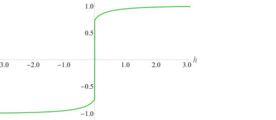
<figcaption class="paper-figure-caption"><b>Fig 1.</b> Figure 1: Magnetization m versus external field h for k = 4, J = 1 and a fixed β = 0.2 &lt; βtree c = 1 2 log 2 = 0.346 . . . (left) and β = 0.4 &gt; βtree c (right).</figcaption>
</figure>
<figure class="paper-figure-card">

<figcaption class="paper-figure-caption"><b>Fig 2.</b> Figure 2: The curve represents the spontaneous magnetization m0 as a function of the inverse temperature β with the parameters k = 4 and J = 1. The vertical dashed line marks the second-order phase transition at βtree c = 1</figcaption>
</figure>
</div>

<p><strong>Summary.</strong> This paper provides an exact solution for the free energy of the Ising model on random regular graphs using advanced analytic combinatorics. It rigorously proves that the system undergoes a second-order phase transition at a specific critical temperature, confirming mean-field critical exponents. The methodology involves mapping the partition function to counting weighted edge-bicolored graphs in the thermodynamic limit.</p>
<p><strong>Why it may be interesting.</strong> While focused on classical statistical mechanics, the rigorous mathematical tools developed—analytic combinatorics applied to large random structures—are highly relevant for analyzing complex quantum many-body systems where exact enumeration is intractable.</p>
<details>
<summary>Detailed structure</summary>
<p><strong>Main problem.</strong> The primary goal is to find an exact solution for the free energy of the ferromagnetic Ising model defined on a random regular graph ensemble.</p>
<p><strong>Main result.</strong> The model exhibits a second-order phase transition at a critical temperature $T_c$, and the critical exponents ($\alpha=0, eta_{mag}=1/2, \gamma=1, \delta=3$) match those of the mean-field universality class.</p>
<p><strong>Method.</strong> The authors use analytic combinatorics by expressing the partition function as a generating function for labeled edge-bicolored graphs and calculating its asymptotic enumeration in the thermodynamic limit.</p>
<p><strong>Model / system.</strong> The system is the Ising model ($    ext{Z}_2$ spin system) defined on a random $k$-regular graph ensemble. The Hamiltonian includes ferromagnetic coupling ($J>0$) and an external magnetic field ($h$).</p>
<p><strong>Key observables.</strong> Free energy in the thermodynamic limit, spontaneous magnetization $m_0(eta)$, and critical exponents ($\alpha, eta_{mag}, \gamma, \delta$).</p>
<p><strong>Important parameters / regimes.</strong> Inverse temperature $eta$, coupling constant $J$, external field $h$, and graph degree $k$. The critical point is defined by $eta_{	ext{tree}}^c = rac{1}{2J} \log\left(rac{k}{k-2}
ight)$.</p>
<p><strong>Assumptions / limitations.</strong> The calculation yields an <em>annealed</em> free energy, and the analysis relies on identifying a unique global maximum of auxiliary functions derived from asymptotic enumeration.</p>
<p><strong>Figures summary.</strong> Figure 1 shows magnetization vs. external field for fixed $eta$. Figure 2 illustrates spontaneous magnetization ($m_0$) versus inverse temperature ($eta$), clearly marking the second-order phase transition at $eta_{	ext{tree}}^c$.</p>
<p><strong>Paper structure.</strong> The paper progresses from defining the partition function and using high-temperature expansions to deriving an identity involving subgraphs. It then uses asymptotic enumeration techniques (saddle point approximation) on these graph counts to determine the free energy in the thermodynamic limit, culminating in the calculation of critical exponents.</p>
</details>
<details>
<summary>Abstract</summary>
<p>We give an exact solution of the ferromagnetic Ising model on a random regular graph ensemble via analytic combinatorics. Expressing the partition function as the generating function of labeled edge-bicolored graphs, we obtain the free energy in the thermodynamic limit from the asymptotic enumeration of these graphs. A simple analysis of the resulting formula reveals a second-order phase transition with critical exponents of the mean-field universality class.</p>
</details>
<p><sub><a href="#top">↑ back to top</a></sub></p>

<p><a id="paper-2607.08158"></a></p>
<h3 id="continuous-variable-mimo-thz-quantum-secret-sharing-gaussian-modulation-and-passive-modulation"><a href="http://arxiv.org/abs/2607.08158v1">Continuous-Variable MIMO THz Quantum Secret Sharing: Gaussian-modulation and Passive-modulation</a></h3>
<p><strong>Authors:</strong> Leixin Wu, Jiayu Pan, Fangzhe Chen, Lingtao Zhang, Bowen Zheng, Tie Qiu<br>
<strong>Type:</strong> theory · <strong>Category:</strong> quantum information and computing · <strong>PDF:</strong> <a href="https://arxiv.org/pdf/2607.08158v1">https://arxiv.org/pdf/2607.08158v1</a><br>
<strong>Analysis basis:</strong> full PDF text, analyzed in chunks
<strong>Topic relevance:</strong> <code>interference shaping light</code> <strong>1/5</strong></p>
<div class="figure-strip-hint">↔ Scroll figures horizontally</div>
<div class="paper-figures-scroll">
<figure class="paper-figure-card">
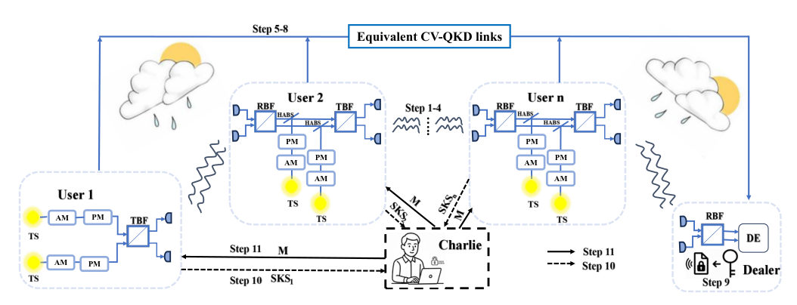
<figcaption class="paper-figure-caption"><b>Fig 1.</b> Fig. 1. Schematic diagram of the GMCS MIMO THz-QSS protocol. AM and PM: amplitude modulator and phase modulator, TBF and RBF: transmit and receive beamforming, DE: detection, TS: terahertz source, SKS: secret-key share.</figcaption>
</figure>
<figure class="paper-figure-card">

<figcaption class="paper-figure-caption"><b>Fig 2.</b> Fig. 2. The usage of raw data generated by 𝑛users and dealer in the 𝑗-th SISO channel.</figcaption>
</figure>
<figure class="paper-figure-card">
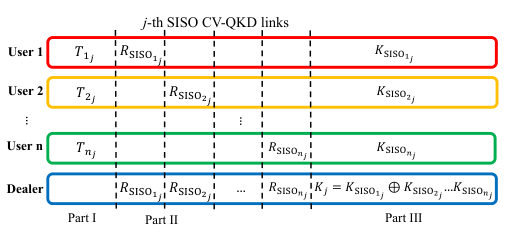
<figcaption class="paper-figure-caption"><b>Fig 3.</b> Figure 2 shows how raw data from each SISO subchannel are partitioned into parameter estimation, SKR calculation, and final key generation. The raw data are divided into three segments: Part I is used to estimate the channel transmittance 𝑇𝑘𝑗, Part II is used to compute 𝑅MIMO, and Part III is used for final key generation. The raw data of Part I and Part II are randomly selected by both the dealer and the user. After</figcaption>
</figure>
<figure class="paper-figure-card">
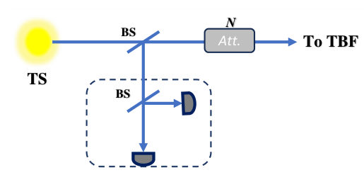
<figcaption class="paper-figure-caption"><b>Fig 4.</b> Fig. 3. The generation process of PMCS. TS: terahertz source, BS: beam splitter, 𝐴𝑡𝑡.: attenuator, 𝑁: the noise generated by 𝐴𝑡𝑡.</figcaption>
</figure>
<figure class="paper-figure-card">
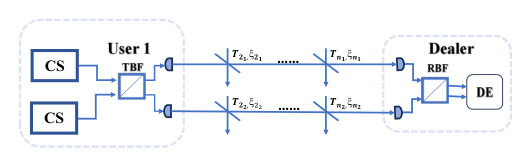
<figcaption class="paper-figure-caption"><b>Fig 5.</b> Fig. 4. Equivalent model for computing the SKR of MIMO THz QSS pro- tocol. CS: coherent state, TBF and RBF: transmit and receive beamforming, DE: detection.</figcaption>
</figure>
</div>

<p><strong>Summary.</strong> This paper proposes a novel Continuous-Variable Quantum Secret Sharing protocol leveraging a MIMO architecture operating in the THz band to overcome the limitations of point-to-point QKD. By decomposing the channel via beamforming and analyzing both Gaussian and passive modulation schemes, it derives theoretical benchmarks showing significant improvements in key rate and transmission distance for multi-user quantum communication.</p>
<p><strong>Why it may be interesting.</strong> The work pushes quantum communication into high-frequency regimes (THz) using advanced MIMO techniques, which is crucial for realizing practical quantum networks in challenging wireless environments.</p>
<details>
<summary>Detailed structure</summary>
<p><strong>Main problem.</strong> The paper addresses the limitation of Quantum Key Distribution (QKD) being point-to-point by proposing a multi-user Quantum Secret Sharing (QSS) protocol.</p>
<p><strong>Main result.</strong> The proposed MIMO architecture significantly improves both the achievable Secret Key Rate (SKR) and transmission distance compared to conventional SISO schemes in the THz band.</p>
<p><strong>Method.</strong> It utilizes transmit-receive beamforming to decompose the MIMO channel into parallel SISO subchannels, analyzing eight protocol variants under Gaussian collective attacks.</p>
<p><strong>Model / system.</strong> The system is a Continuous-Variable (CV) QSS protocol operating over an atmospheric channel using a Multiple-Input Multiple-Output (MIMO) architecture in the Terahertz (THz) band. It compares Gaussian Modulation (GMCS) and Passive Modulation (PMCS).</p>
<p><strong>Key observables.</strong> Secret Key Rate (SKR), transmission distance, and minimum net secure key bits shared per MIMO-QSS round.</p>
<p><strong>Important parameters / regimes.</strong> Antenna configurations ($32 	imes 32$ or $1024 	imes 1024$), atmospheric channel parameters, and finite-size error correction probabilities ($\epsilon_{	ext{cor}}$).</p>
<p><strong>Assumptions / limitations.</strong> Simulation results assume ideal conditions like perfect Channel State Information (CSI), phase synchronization, and beamforming; the analysis also incorporates thermal noise for physical realism.</p>
<p><strong>Figures summary.</strong> Figure 1 schematically shows the GMCS MIMO THz-QSS protocol with AM/PM modulators. Figure 2 illustrates the data partitioning process into parameter estimation, SKR calculation, and key generation stages across SISO subchannels.</p>
<p><strong>Paper structure.</strong> The paper first introduces the need for multi-user QSS over MIMO channels. It details the transmission procedure involving beamforming, modulation (GMCS/PMCS), detection (homodyne/heterodyne), and subsequent classical post-processing steps to derive SKR expressions. Finally, it derives formulas for composable finite-size SKRs.</p>
</details>
<details>
<summary>Abstract</summary>
<p>Although quantum key distribution (QKD) enables information-theoretically secure key distribution, it is mainly designed for point-to-point communication and cannot directly support multi-user collaborative scenarios. To address this limitation, quantum secret sharing (QSS) has been proposed to enable secure multiparty key sharing. However, most existing QSS protocols rely on a single-input single-output (SISO) channel, which limits the achievable secret key rate (SKR) and transmission distance. This paper proposes a continuous-variable (CV) QSS protocol based on a multiple-input multiple-output (MIMO) architecture operating in the terahertz (THz) band. In the proposed scheme, transmit-receive beamforming decomposes the MIMO channel into multiple parallel SISO subchannels, thereby improving both the SKR and transmission distance. We describe the QSS transmission procedure and derive the SKR expressions for eight protocol variants under Gaussian collective attacks. Specifically, Gaussian modulation and passive modulation are considered at the transmitter, while homodyne and heterodyne detection are considered at the receiver. Both asymptotic and composable finite-size SKR formulas are derived to characterize the ideal upper-bound performance and the achievable performance under finite resources, respectively. Simulation results show that, under ideal assumptions including perfect channel state information, perfect phase synchronization, and ideal beamforming, the Gaussian-modulation protocol with a 32 x 32 antenna configuration and the passive-modulation protocol with a 1024 x 1024 antenna configuration achieve transmission distances of 14.99 m and 160 m in the atmospheric channel, respectively. These results provide an idealized theoretical benchmark for evaluating the potential performance gains of MIMO-assisted THz CV-QSS in indoor and short-range outdoor wireless networks.</p>
</details>
<p><sub><a href="#top">↑ back to top</a></sub></p>

<p><a id="paper-2607.08092"></a></p>
<h3 id="equivariant-quantum-clustering-with-differential-privacy-parameter-efficient-privacy-preserving-analysis-across-heterogeneous-sensitive-datasets"><a href="http://arxiv.org/abs/2607.08092v1">Equivariant Quantum Clustering with Differential Privacy: Parameter-Efficient Privacy-Preserving Analysis Across Heterogeneous Sensitive Datasets</a></h3>
<p><strong>Authors:</strong> B. M. Taslimul Haq, Md Arifur Rahman, Tawfiq Al Islam Foysal, Abdullah Al Noman, Abir Ahmed<br>
<strong>Type:</strong> both · <strong>Category:</strong> quantum information and computing · <strong>PDF:</strong> <a href="https://arxiv.org/pdf/2607.08092v1">https://arxiv.org/pdf/2607.08092v1</a><br>
<strong>Analysis basis:</strong> full PDF text, analyzed in chunks
<strong>Topic relevance:</strong> <code>methods for driven-dissipative</code> <strong>1/5</strong></p>
<div class="figure-strip-hint">↔ Scroll figures horizontally</div>
<div class="paper-figures-scroll">
<figure class="paper-figure-card">
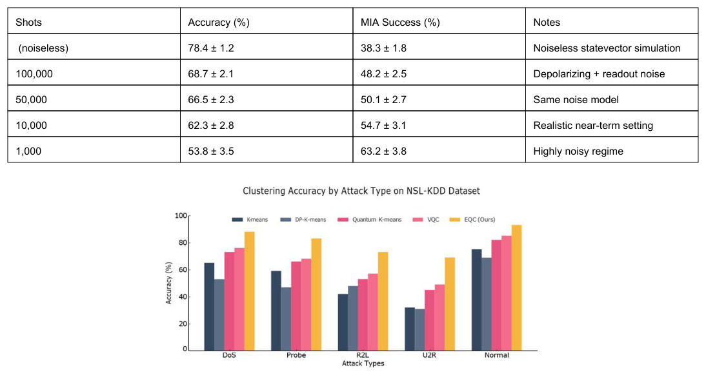
<figcaption class="paper-figure-caption"><b>Fig 1.</b> Figure 1. Clustering accuracy by attack type on the NSL-KDD dataset (k = 5, _tot = 1.0, = 10). Bar heights represent mean clustering</figcaption>
</figure>
<figure class="paper-figure-card">
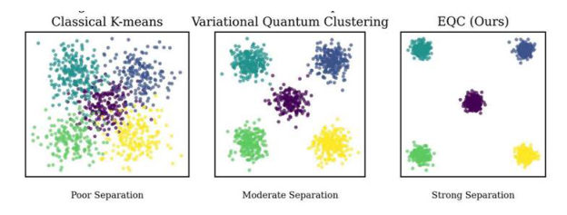
<figcaption class="paper-figure-caption"><b>Fig 2.</b> Figure 2. t-SNE visualization of learned quantum feature spaces on NSL-KDD (k = 5, _tot = 1.0, = 10). Each point represents a data</figcaption>
</figure>
<figure class="paper-figure-card">
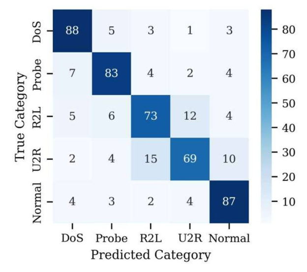
<figcaption class="paper-figure-caption"><b>Fig 3.</b> Figure 3. Row-normalized confusion matrix for EQC on NSL-KDD (k = 5, _tot = 1.0, = 10). Each cell value represents the fraction of</figcaption>
</figure>
<figure class="paper-figure-card">
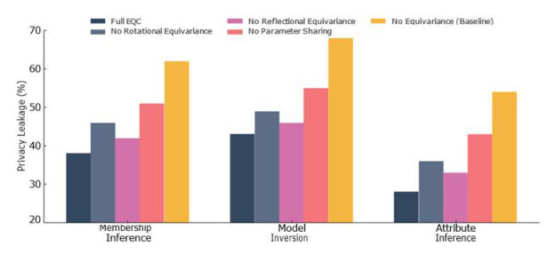
<figcaption class="paper-figure-caption"><b>Fig 4.</b> Figure 4. Ablation of equivariance components on privacy leakage across three attack types: Membership Inference Attack (MIA),</figcaption>
</figure>
<figure class="paper-figure-card">
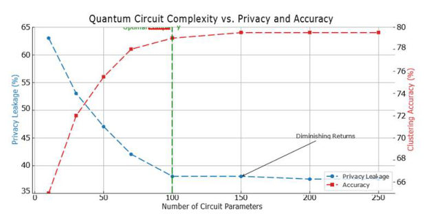
<figcaption class="paper-figure-caption"><b>Fig 5.</b> Figure 5. Impact of circuit depth L {1, 2, 3, 4, 5, 6} on clustering accuracy and membership inference attack (MIA) success rate on</figcaption>
</figure>
</div>

<p><strong>Summary.</strong> This paper introduces Equivariant Quantum Clustering (EQC), a novel framework designed to perform clustering on highly sensitive data while rigorously maintaining differential privacy. It achieves state-of-the-art performance by combining symmetry-aware parameter sharing in quantum circuits with formal DP guarantees across multiple heterogeneous datasets.</p>
<p><strong>Why it may be interesting.</strong> While the primary focus is data privacy/ML, the use of symmetry constraints ($p4m$) within a quantum circuit architecture provides an interesting case study in applying group theory principles to variational quantum algorithms for structured regularization.</p>
<details>
<summary>Detailed structure</summary>
<p><strong>Main problem.</strong> The core challenge is balancing high analytical utility with stringent data confidentiality when clustering sensitive, heterogeneous datasets.</p>
<p><strong>Main result.</strong> The proposed framework achieves superior clustering accuracy (e.g., 79.3% on NSL-KDD) while significantly reducing privacy leakage compared to classical and quantum baselines under strict differential privacy guarantees.</p>
<p><strong>Method.</strong> It integrates symmetry-aware equivariant quantum circuits with rigorous differential privacy mechanisms across a multi-stage pipeline for secure data analysis.</p>
<p><strong>Model / system.</strong> The model is the Equivariant Quantum Clustering (EQC) framework, utilizing parameterized quantum circuits operating on qubits arranged in a $2	imes4$ grid topology to enforce $p4m$ symmetry constraints.</p>
<p><strong>Key observables.</strong> Clustering accuracy, success rate of membership inference attacks (MIA), model inversion reconstruction error (MSE), and attribute inference error rate.</p>
<p><strong>Important parameters / regimes.</strong> Privacy budget ($\epsilon=1.0, \delta=10^{-5}$), noise standard deviation ($\sigma$), circuit depth ($L=4$), and optimization hyperparameters (e.g., $a=0.1$).</p>
<p><strong>Assumptions / limitations.</strong> The observed performance gains are primarily attributed to parameter efficiency via equivariance constraints and DP composition, rather than unique quantum mechanical effects requiring fault-tolerant hardware.</p>
<p><strong>Figures summary.</strong> Figures illustrate EQC's superior MIA resistance (lowest rate) and model inversion robustness compared to baselines; Figure 10 shows gradual accuracy degradation under noise for EQC versus faster drops for competitors.</p>
<p><strong>Paper structure.</strong> The paper details the problem setup, introduces the five-stage EQC pipeline (preprocessing $
ightarrow$ quantum encoding $
ightarrow$ equivariant circuit $
ightarrow$ kernel computation $
ightarrow$ spectral clustering), presents results across multiple datasets, and concludes by analyzing performance trade-offs against various attacks.</p>
</details>
<details>
<summary>Abstract</summary>
<p>Privacy-preserving clustering is critical for analyzing sensitive data in healthcare, cybersecurity, and enterprise applications, where maintaining data confidentiality must be balanced with analytical performance. This paper presents Equivariant Quantum Clustering (EQC), a parameter-efficient framework that integrates symmetry-aware quantum circuits with differential privacy to improve the privacy-utility tradeoff. EQC employs p4m equivariant parameter sharing to reduce circuit complexity while preserving informative feature representations. The framework is evaluated on three privacy-sensitive datasets: NSL-KDD, CERT Insider Threat v6.2, and a synthetic MIMIC-III clinical dataset. On the NSL-KDD benchmark, EQC achieves 79.3% clustering accuracy while reducing membership inference attack success to 38.3% under a privacy budget of ε = 1.0 and δ = 10^-5, outperforming representative classical and quantum baselines. Ablation studies indicate that the performance gains primarily arise from parameter-efficient circuit design combined with differential privacy. The results demonstrate that EQC provides a practical quantum-ready framework for secure and privacy-preserving clustering across heterogeneous sensitive datasets.</p>
</details>
<p><sub><a href="#top">↑ back to top</a></sub></p>

<p><a id="paper-2607.08235"></a></p>
<h3 id="full-spectrum-quantum-simulation-for-the-nuclear-shell-model"><a href="http://arxiv.org/abs/2607.08235v1">Full-Spectrum Quantum Simulation for the Nuclear Shell Model</a></h3>
<p><strong>Authors:</strong> B. Maheshwari, P. Stevenson, P. Van Isacker<br>
<strong>Type:</strong> theory · <strong>Category:</strong> quantum information and computing · <strong>PDF:</strong> <a href="https://arxiv.org/pdf/2607.08235v1">https://arxiv.org/pdf/2607.08235v1</a><br>
<strong>Analysis basis:</strong> full PDF text, analyzed in chunks
<strong>Topic relevance:</strong> <code>analog quantum simulation</code> <strong>1/5</strong></p>
<div class="figure-strip-hint">↔ Scroll figures horizontally</div>
<div class="paper-figures-scroll">
<figure class="paper-figure-card">
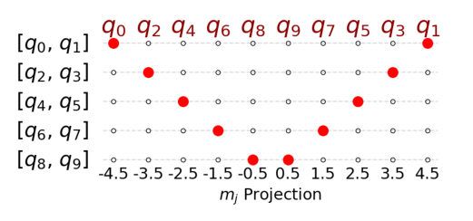
<figcaption class="paper-figure-caption"><b>Fig 1.</b> Figure 1: A 10-qubit mapping and initial orthogonal Hartree-Fock (HF) states used in the current quantum simulation for two nucleons in 0g9/2 orbital. Red circles denote the occupied single-particle states in m-scheme.</figcaption>
</figure>
<figure class="paper-figure-card">
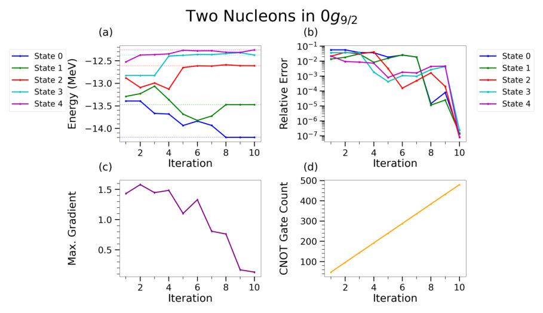
<figcaption class="paper-figure-caption"><b>Fig 2.</b> Figure 2: Variation of (a) simulated energies (in MeV) for ground and excited states shown in different color along with exact solutions shown by dashed lines (b) relative error defined by (simulated - exact) /exact (c) maximum gradient (in MeV) of the appended operator (d) CNOT gate count, across iterations for two nucleons in 0g9/2 orbital.</figcaption>
</figure>
<figure class="paper-figure-card">
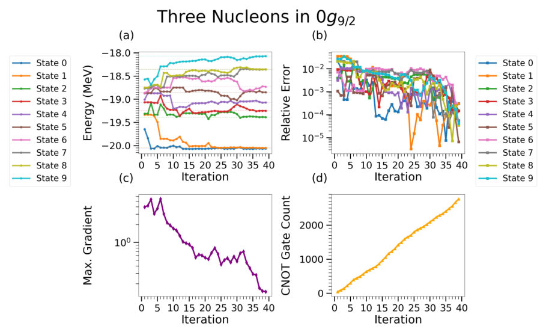
<figcaption class="paper-figure-caption"><b>Fig 3.</b> Figure 3: Variation of (a) energies (in MeV) for ground and excited states shown in different color along with exact solutions shown by dashed lines (b) relative error (c) maximum gradient (in MeV) of the appended operator (d) CNOT gate count, across iterations for three nucleons in 0g9/2 orbital.</figcaption>
</figure>
</div>

<p><strong>Summary.</strong> This work presents a novel quantum simulation technique, ADAPT-SSVQE, designed to solve the intractable problem of diagonalizing large nuclear shell model Hamiltonians. By mapping the fermionic Hamiltonian to qubits and using an adaptive variational approach, the authors can simultaneously find multiple excited states for small nucleon systems with high accuracy. This demonstrates a powerful pathway toward simulating complex quantum many-body physics beyond classical computational limits.</p>
<p><strong>Why it may be interesting.</strong> While focused on nuclear physics, the core methodology—using advanced quantum algorithms like ADAPT-SSVQE to tackle exponentially hard many-body problems while enforcing symmetries—is directly transferable to simulating strongly correlated electron systems or complex molecular Hamiltonians in AMO physics.</p>
<details>
<summary>Detailed structure</summary>
<p><strong>Main problem.</strong> The primary challenge is overcoming the exponential dimensionality of the nuclear shell model Hamiltonian diagonalization, which exceeds classical computational capacity.</p>
<p><strong>Main result.</strong> The authors successfully demonstrated a quantum simulation approach that simultaneously extracts multiple orthogonal eigenstates for two and three nucleons with spectroscopic accuracy relative to exact diagonalization.</p>
<p><strong>Method.</strong> They employ an ADAPT-SSVQE algorithm, combining the Subspace Search VQE with the ADAPT ansatz, applied after mapping the fermionic Hamiltonian using the Jordan-Wigner transformation.</p>
<p><strong>Model / system.</strong> The system is based on the nuclear shell model Hamiltonian ($\hat{H}_{	ext{eff}}$) describing protons and neutrons interacting via a residual interaction (e.g., JUN45). The problem is mapped onto qubits while preserving fermionic anti-commutation relations.</p>
<p><strong>Key observables.</strong> Simultaneous convergence of multiple mutually orthogonal eigenstates, restoration of total angular momentum ($\hat{J}^2$) symmetry, and energy eigenvalues compared to exact diagonalization.</p>
<p><strong>Important parameters / regimes.</strong> The simulation was benchmarked for two and three identical nucleons in a $j = 9/2$ orbital within a 10-qubit active space.</p>
<p><strong>Assumptions / limitations.</strong> The primary limitation addressed is the exponential scaling of the Hilbert space; the method assumes quantum computation can scale beyond classical limits, though circuit depth remains a concern for NISQ devices.</p>
<p><strong>Figures summary.</strong> Figures track energy convergence and relative error over simulation iterations for two and three nucleons. They also show the growth of CNOT gate count, illustrating the increasing complexity of the required quantum circuits.</p>
<p><strong>Paper structure.</strong> The paper details the theoretical framework by mapping the fermionic Hamiltonian to qubits (JW transformation). It then introduces and implements the ADAPT-SSVQE algorithm for simultaneous state extraction, culminating in benchmarking results for 2 and 3 nucleons showing convergence and symmetry restoration.</p>
</details>
<details>
<summary>Abstract</summary>
<p>The nuclear shell model is a general way of expressing the many-body nuclear Hamiltonian and deciphering the underlying nuclear structure. In today's era of modern and high-power computation, the primary limitation of the nuclear shell model is the enormous dimensionality of its Hilbert space, which far exceeds available storage capacity and prevents the diagonalization of the full Hamiltonian matrix in that space. Quantum computing offers a scalable solution to bypass this curse of dimensionality. In this work, we introduce a single-run quantum simulation capable of obtaining multiple shell-model eigenstates simultaneously. The nuclear Hamiltonian is transformed from a bit to a qubit basis using the Jordan-Wigner transformation, explicitly preserving fermionic anti-commutation. We employ a Subspace Search Variational Quantum Eigensolver (SSVQE) along with an Adaptive Derivative-Assembled Pseudo-Trotter (ADAPT) ansatz to construct the quantum circuit required to solve the shell-model problem. The ADAPT-SSVQE algorithm uses a symmetry-preserving single and double-excitation operator pool and optimizes a weighted energy sum to obtain the simultaneous convergence of all eigenstates within a targeted MJ subspace, eliminating the need for post-processing efforts to extract excited spectra. We benchmark this approach by solving the problem for two and three identical nucleons in a j = 9/2 orbital, successfully extracting five and ten mutually orthogonal states, respectively, within a 10-qubit active space. The algorithm achieves spectroscopic accuracy, in simulation, relative to exact diagonalization and intrinsically restores total angular momentum (\hat{J}^2) symmetry.</p>
</details>
<p><sub><a href="#top">↑ back to top</a></sub></p>

<p><a id="paper-2607.08023"></a></p>
<h3 id="interfacial-chirality-induced-magnetic-field-free-switching-with-high-energy-efficiency-in-all-vdw-heterostructures"><a href="http://arxiv.org/abs/2607.08023v1">Interfacial chirality-induced magnetic-field-free switching with high energy efficiency in all-vdW heterostructures</a></h3>
<p><strong>Authors:</strong> Kai-Xuan Zhang, Suik Cheon, Seungbok Lee, Joonyoung Choi, Jihoon Keum, Hyuncheol Kim, Yeochan An, Woonghee Cho, Suhan Son, Jingyuan Cui, Pyeongjae Park, Younjung Jo, Jun Sung Kim, Hyun-Woo Lee, Je-Geun Park<br>
<strong>Type:</strong> experiment · <strong>Category:</strong> other · <strong>PDF:</strong> <a href="https://arxiv.org/pdf/2607.08023v1">https://arxiv.org/pdf/2607.08023v1</a><br>
<strong>Analysis basis:</strong> full PDF text, analyzed in chunks
<strong>Topic relevance:</strong> <code>spintronics-quantum-optics interface</code> <strong>1/5</strong></p>
<div class="figure-strip-hint">↔ Scroll figures horizontally</div>
<div class="paper-figures-scroll">
<figure class="paper-figure-card">
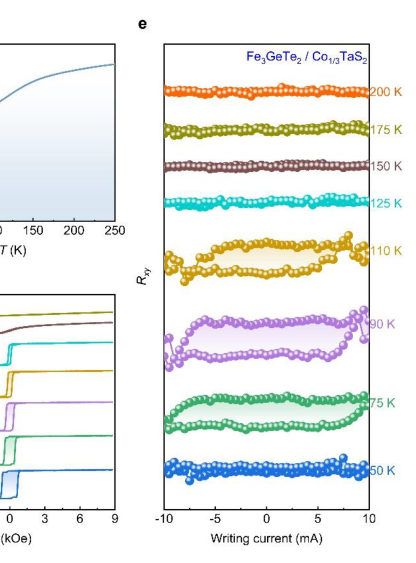
<figcaption class="paper-figure-caption"><b>Fig 1.</b> Fig. 1 | Magnetic-field-free switching demonstration of Fe3GeTe2/Co1/3TaS2</figcaption>
</figure>
<figure class="paper-figure-card">
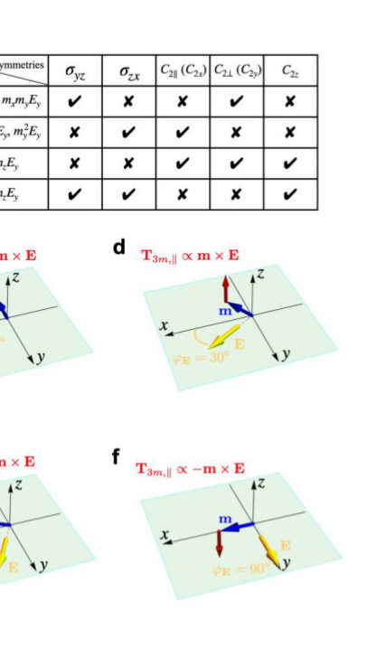
<figcaption class="paper-figure-caption"><b>Fig 2.</b> Fig. 2 | Interface symmetry analysis and schematic illustration of unconventional</figcaption>
</figure>
<figure class="paper-figure-card">
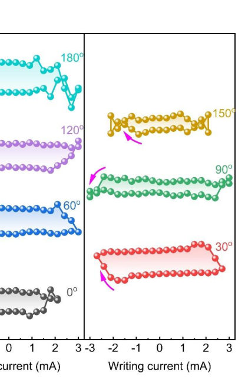
<figcaption class="paper-figure-caption"><b>Fig 3.</b> Fig. 3 | Current direction dependence of the magnetic-field-free switching. a,</figcaption>
</figure>
<figure class="paper-figure-card">
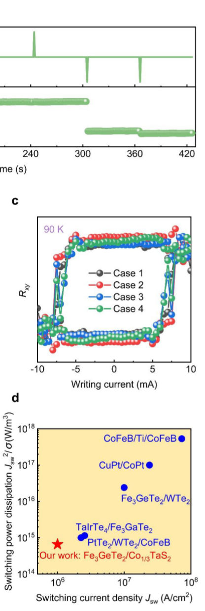
<figcaption class="paper-figure-caption"><b>Fig 4.</b> Fig. 4 | Well-behaved switching performance readily controlled by writing current</figcaption>
</figure>
</div>

<p><strong>Summary.</strong> This work demonstrates a new pathway for ultra-low power magnetic switching by utilizing interfacial chirality in vdW heterostructures. By generating two unconventional spin-orbit torques, the system achieves field-free magnetization reversal with minimal energy loss. This establishes interfacial chirality as a powerful design handle for next-generation spintronic devices.</p>
<p><strong>Why it may be interesting.</strong> While focused on condensed matter spintronics rather than fundamental quantum dynamics, the concept of using symmetry breaking (chirality) to engineer novel, highly controllable quantum phenomena at interfaces is relevant to understanding emergent behavior in complex quantum systems.</p>
<details>
<summary>Detailed structure</summary>
<p><strong>Main problem.</strong> The research aims to demonstrate highly energy-efficient, magnetic-field-free switching of perpendicular magnetization using interfacial chirality effects in all van der Waals (vdW) heterostructures.</p>
<p><strong>Main result.</strong> Magnetic-field-free switching was achieved with ultralow current densities ($\sim 10^6 	ext{ A/cm}^2$) by exploiting two unconventional spin-orbit torques originating from the interface's chirality. Replacing one material allowed this effect to persist up to room temperature.</p>
<p><strong>Method.</strong> The study combines experimental transport measurements (measuring $R_{xy}$ vs. writing current) with detailed symmetry analysis of the resulting spin-orbit torque terms.</p>
<p><strong>Model / system.</strong> The physical platform is an all vdW heterostructure, specifically $ ext{Fe}<em 1_3="1/3">3   ext{GeTe}_2/    ext{Co}</em>_2$. The key physics relies on the structural chirality at the interface, which generates unique torques beyond what bulk symmetry predicts.}   ext{TaS</p>
<p><strong>Key observables.</strong> Anomalous Hall resistance ($R_{xy}$), critical switching current density ($J_{sw}$), and power dissipation ($rac{J_{sw}^2}{\sigma}$).</p>
<p><strong>Important parameters / regimes.</strong> Ultralow current densities ($\sim 10^6 	ext{ A/cm}^2$) and minimal power dissipation ($< 10^{15} 	ext{ W/m}^3$); switching observed across a temperature range including room temperature with material substitution.</p>
<p><strong>Assumptions / limitations.</strong> The observed phenomena are uniquely attributed to the breaking of mirror plane symmetries (interfacial chirality) leading to unconventional spin-orbit torques.</p>
<p><strong>Figures summary.</strong> Figures illustrate the device structure, temperature dependence of resistance kinks and anomalous Hall effect, and crucially, hysteresis loops showing magnetization switching occurring solely under an applied current with zero external magnetic field. The symmetry analysis details the three-fold dependence of the torque on writing current direction.</p>
<p><strong>Paper structure.</strong> The paper establishes the physical system (vdW heterostructure), theoretically derives unconventional spin-orbit torques based on interfacial chirality, and then presents experimental evidence showing robust, low-power magnetic-field-free switching across various temperatures and material variations.</p>
</details>
<details>
<summary>Abstract</summary>
<p>Chirality, a central concept across many scientific disciplines, continues to inspire the discovery of novel physical phenomena. In condensed matter physics, structural chirality - defined by the absence of mirror plane symmetries - has primarily been explored in bulk materials. However, new chiral phenomena can emerge uniquely at the interface, distinct from their bulk counterparts, when a chiral material forms a heterostructure. Here, we demonstrate that all van-der-Waals (vdW) heterostructure composed of the chiral Co1/3TaS2 and the achiral vdW ferromagnet Fe3GeTe2 exhibits two distinct and unconventional spin-orbit torques originating from the interfacial chirality. These torques enable magnetic-field-free switching of perpendicular magnetization with ultralow current density ~ 10^6 A/cm^2 and minimal power dissipation &lt; 10^15 W/m^3. Moreover, by replacing Fe3GeTe2 with a similar vdW ferromagnet, Fe3GaTe2, but of higher Curie temperature, we achieved the magnetic-field-free switching at room temperature in the Fe3GaTe2/Co1/3TaS2 vdW heterostructure. Our findings establish interfacial chirality as a powerful new handle for spintronic control, opening a new pathway to explore chirality-induced phenomena beyond the bulk symmetry constraints - and paving the way toward highly efficient, low-power spintronic devices based on all-vdW heterostructures.</p>
</details>
<p><sub><a href="#top">↑ back to top</a></sub></p>

<p><a id="paper-2607.08169"></a></p>
<h3 id="overview-of-applications-of-quantum-computing-in-qcd"><a href="http://arxiv.org/abs/2607.08169v1">Overview of Applications of Quantum Computing in QCD</a></h3>
<p><strong>Authors:</strong> Germán Rodrigo<br>
<strong>Type:</strong> theory · <strong>Category:</strong> quantum information and computing · <strong>PDF:</strong> <a href="https://arxiv.org/pdf/2607.08169v1">https://arxiv.org/pdf/2607.08169v1</a><br>
<strong>Analysis basis:</strong> full PDF text, analyzed in chunks
<strong>Topic relevance:</strong> <code>Keldysh / 2PI / non-Gaussian methods</code> <strong>1/5</strong></p>
<div class="figure-strip-hint">↔ Scroll figures horizontally</div>
<div class="paper-figures-scroll">
<figure class="paper-figure-card">
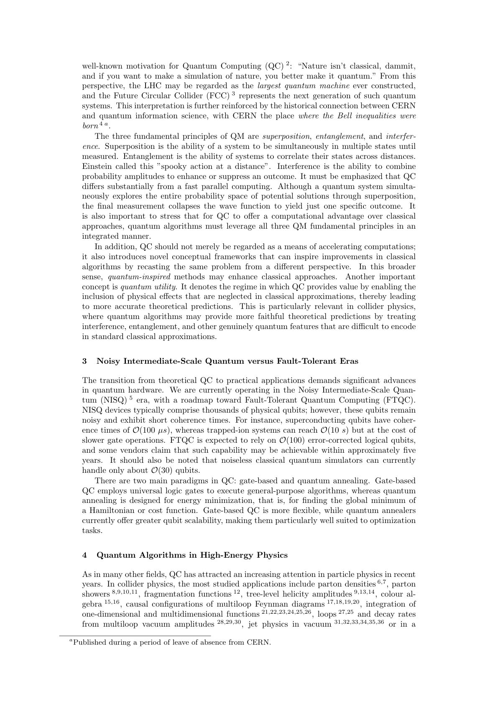
<figcaption class="paper-figure-caption"><b>Fig 1.</b> Low-resolution page preview, page 2</figcaption>
</figure>
<figure class="paper-figure-card">
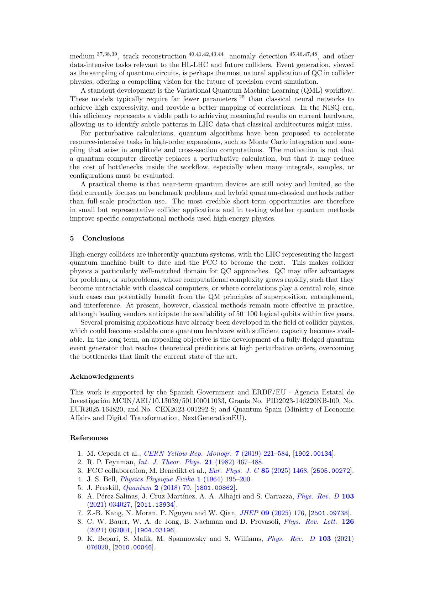
<figcaption class="paper-figure-caption"><b>Fig 2.</b> Low-resolution page preview, page 3</figcaption>
</figure>
<figure class="paper-figure-card">
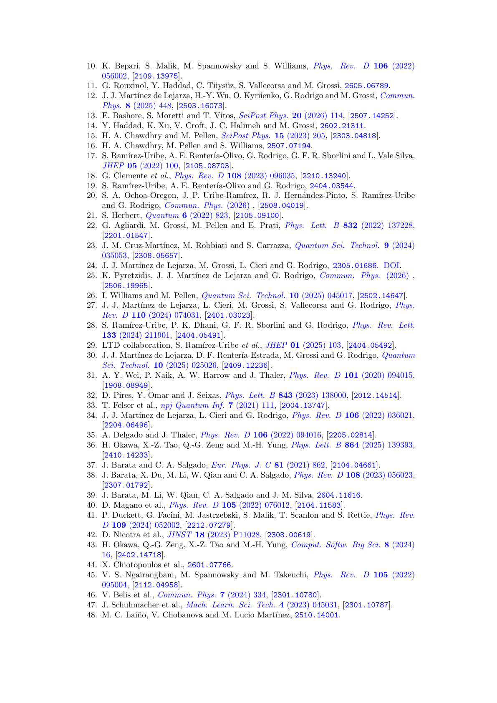
<figcaption class="paper-figure-caption"><b>Fig 3.</b> Low-resolution page preview, page 4</figcaption>
</figure>
</div>

<p><strong>Summary.</strong> This paper surveys how quantum computing can be applied to solve computationally hard problems arising from Quantum Chromodynamics (QCD) in particle collider physics. It outlines algorithms for tasks like event generation and amplitude calculation, contrasting the potential advantages of QC against current classical limitations. While acknowledging that NISQ hardware is a hurdle, it positions QC as a necessary tool to achieve the required precision for future high-luminosity experiments.</p>
<p><strong>Why it may be interesting.</strong> It frames high-energy physics calculations as an application area for quantum computation, suggesting that fundamental quantum principles (superposition, entanglement) are key to overcoming classical computational barriers in QFT simulations.</p>
<details>
<summary>Detailed structure</summary>
<p><strong>Main problem.</strong> The theoretical predictions for particle interactions, particularly within QCD, are struggling to keep pace with the unprecedented data collection capabilities of colliders like the HL-LHC.</p>
<p><strong>Main result.</strong> Quantum computing offers a promising framework to tackle computationally intensive tasks in high-energy physics, though current hardware limitations restrict immediate full utilization.</p>
<p><strong>Method.</strong> The paper surveys various quantum algorithms proposed for simulating QCD processes, emphasizing hybrid quantum-classical approaches due to NISQ constraints.</p>
<p><strong>Model / system.</strong> The focus is on Quantum Chromodynamics (QCD) describing particle interactions at colliders. The theoretical bottleneck limits the ability to reduce uncertainties below 2%-4% required by future experiments.</p>
<p><strong>Key observables.</strong> Projected experimental uncertainties for Higgs boson couplings ($\sim 1.5\%–1.8\%$); theoretical uncertainties for gluon and top quark couplings ($2.1\%$ and $3.1\%$, respectively).</p>
<p><strong>Important parameters / regimes.</strong> The current hardware is in the Noisy Intermediate-Scale Quantum (NISQ) era, contrasting with the long-term goal of Fault-Tolerant Quantum Computing (FTQC).</p>
<p><strong>Assumptions / limitations.</strong> Classical simulations may be intrinsically inefficient for genuinely quantum features like interference and entanglement; short-term focus must remain on hybrid methods.</p>
<p><strong>Paper structure.</strong> The paper provides a concise overview, detailing the potential applications of QC in event generation, parton shower simulation, amplitude evaluation, integration, and optimization problems relevant to collider physics.</p>
</details>
<details>
<summary>Abstract</summary>
<p>Quantum computing has emerged as a promising framework for addressing computationally demanding problems in collider physics. In recent years, a growing number of quantum algorithms have been proposed for applications ranging from event generation and parton shower simulation to the evaluation of scattering amplitudes, loop and phase-space integration, and optimization problems relevant to experimental analysis. We provide a concise overview of the main ideas behind these developments, with emphasis on the potential advantages of quantum approaches in comparison with classical methods, as well as on the current limitations imposed by noisy intermediate-scale quantum hardware.</p>
</details>
<p><sub><a href="#top">↑ back to top</a></sub></p>

<p><a id="paper-2607.08677"></a></p>
<h3 id="twofold-universality-of-large-math912math-melonic-random-tensors"><a href="http://arxiv.org/abs/2607.08677v1">Twofold universality of large-$N$ melonic random tensors</a></h3>
<p><strong>Authors:</strong> Carlos I. Perez-Sanchez<br>
<strong>Type:</strong> theory · <strong>Category:</strong> statistical mechanics · <strong>PDF:</strong> <a href="https://arxiv.org/pdf/2607.08677v1">https://arxiv.org/pdf/2607.08677v1</a><br>
<strong>Analysis basis:</strong> full PDF text, analyzed in chunks
<strong>Topic relevance:</strong> <code>Keldysh / 2PI / non-Gaussian methods</code> <strong>1/5</strong></p>
<div class="figure-strip-hint">↔ Scroll figures horizontally</div>
<div class="paper-figures-scroll">
<figure class="paper-figure-card">
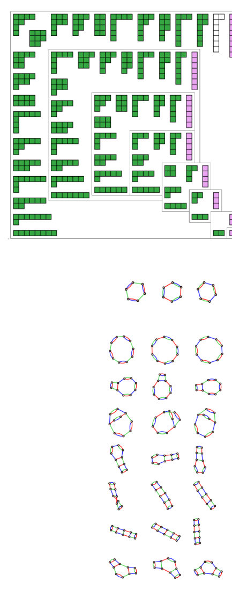
<figcaption class="paper-figure-caption"><b>Fig 1.</b> Figure 2. Some melons for D “ 3: (a) 6-vertices melons and (b) 10-vertices melons. The diagram 4.9 requires having computed integral of their products (not all of them are independent).</figcaption>
</figure>
<figure class="paper-figure-card">
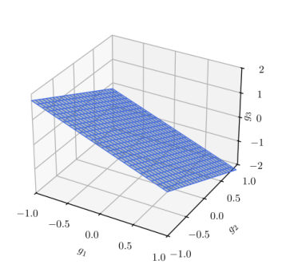
<figcaption class="paper-figure-caption"><b>Fig 2.</b> Figure 3. (a) Critical locus 4g1 ` 4g2 ` 4g3 ` 1 “ 0 of the measure (5.7) (M “ 3, D ě 3), as follows from the Universality Theorem 5.1, using the Dartois-Eynard-Nguyen solution. (b) Exact solution m2pg1, g2q of the large- N two-point function in the case M “ 2. Observe we plot two aspects with different parameters, and are not meant to be compared; instead, observe that the projection of the truncated straight line that shows divergence in (b) to the pg1, g2q-plane of (b) is the critical locus 4g1 ` 4g2 ` 1 “ 0 of M “ 2.</figcaption>
</figure>
<figure class="paper-figure-card">
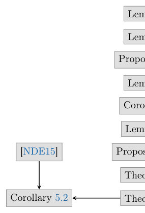
<figcaption class="paper-figure-caption"><b>Fig 3.</b> Figure 4. Logic tree of this article, with implications denoted by ordinary arrows.</figcaption>
</figure>
</div>

<p><strong>Summary.</strong> This theoretical paper establishes a powerful 'twofold universality' result for integrals involving large-$N$ melonic random tensors. It shows that these complex tensor integrals simplify significantly at large $N$, depending only on simple polynomial functions of the graph structure, regardless of the specific details of the interaction or dimension. This provides a universal framework for calculating correlation functions in high-dimensional statistical models.</p>
<p><strong>Why it may be interesting.</strong> The concept of universal behavior emerging from complex combinatorial structures (tensors/graphs) at large $N$ is highly relevant in statistical mechanics, particularly when studying critical phenomena or random matrix theories generalized to higher dimensions.</p>
<details>
<summary>Detailed structure</summary>
<p><strong>Main problem.</strong> The authors investigate constructing a measure exhibiting 'twofold universality' for integrating large-$N$ random tensors, which are generalizations of matrix integrals.</p>
<p><strong>Main result.</strong> They prove that these tensor integrals simplify dramatically at large $N$, becoming independent of intricate combinatorics and the dimensionality $D$ (for $D\geq 3$), depending only on 'melonic polynomials'.</p>
<p><strong>Method.</strong> The analysis involves computing connected correlation functions using Wick contractions ($\pi$) over graph structures, establishing uniqueness theorems for maximal contractions, and comparing cumulants across different theoretical models.</p>
<p><strong>Model / system.</strong> The model is based on random tensors $T_{a_1,\ldots,a_D}$ integrated with respect to a Gaussian measure. The complexity arises from the need to contract indices using graph structures called 'melonic graphs' ($B$), which are analogues of matrix traces.</p>
<p><strong>Key observables.</strong> Melonic polynomials (functions indexed by $n$ related to vertex counts), and the large-$N$ limit of tensor cumulants $\langle B_1 \dots B_n 
angle$.</p>
<p><strong>Important parameters / regimes.</strong> Large $N$, dimensionality $D\geq 3$, and coupling constants ($g_i$).</p>
<p><strong>Assumptions / limitations.</strong> The analysis assumes the tensors are 'melonic' (satisfying a recursive construction) and relies on proving convergence of ratios of cumulants to establish universality.</p>
<p><strong>Figures summary.</strong> Figures illustrate graph structures, such as gluings of $2p$-agons analogous to matrix integrals, and show diagrams related to critical loci and two-point functions for the quartic tensor model.</p>
<p><strong>Paper structure.</strong> The paper progresses from defining the problem (tensor integration), establishing tools like maximal Wick contractions ($\pi_{	ext{max}}$) via graph theory, proving universality theorems (Theorem 4.2 and 5.1), and finally applying these results to confirm the 'twofold universality' of the large-$N$ limit.</p>
</details>
<details>
<summary>Abstract</summary>
<p>We construct a measure that exhibits two aspects of a new type of universality and dramatically simplifies the integration of tensors $T_{a_1,a_2,\ldots,a_D} \in \mathbb{C}$ ($a_1,\ldots,a_D=1,\ldots,N$) at large $N$. In contrast to matrix integration, in which matrix traces canonically yield the integrand, tensors need additional information (equivalent to a $D$-coloured graph $B$) to contract their indices and form a tensor trace $B(T)$. We show that, whenever each $B_1,\ldots, B_n$ can be obtained by a recursive construction known as melonicity, then the leading order in $N$ of the integral of $ {B_1}(T) {B_2}(T) \cdots {B_n}(T) $ is independent of the -- often intricate -- combinatorics of the traces $B_i$, but also, to our surprise, independent of $D$ as far as $D\geq 3$. Instead, at large $N$, these integrals are some functions (indexed by $n$) of the number of vertices $2p_i$ of $B_i$ which we call melonic polynomials. Melonic traces cumulants with respect to any ('interacting') measure \[ \exp\Big\{-N^{D-1} \sum_{i=1}^m g_i {B_i}(T)\Big\} \mathrm{d}μ_0(T) \quad (g_1,\ldots,g_m \in \mathbb{R}, \mathrm{d}μ_0(T) =\text{the tensor Gaussian}) \] with each $B_i$ melonic, can be computed with our universal measure that replaces each $B_i$ by a canonical trace depending only on $p_i$. We prove that any two melonic tensor models are indistinguishable at large-$N$, independently of the number of tensor indices (first universality aspect), and of the fine-grainedness of their interactions (second universality), being a sufficient condition that the couplings (the parameters $g_i$ above) agree and their respective traces are monomials with the same degree in $T$.</p>
</details>
<p><sub><a href="#top">↑ back to top</a></sub></p>
<h2 id="other-papers-8">Other papers (8)</h2>
<p><em>Papers from primary archives without highlighted authors or any topic match. Click to expand.</em></p>
<details>
<summary>Show other papers</summary>

<p><a id="paper-2607.08616"></a></p>
<h3 id="accurate-self-attention-wavefunctions-at-large-scale"><a href="http://arxiv.org/abs/2607.08616v1">Accurate Self-Attention Wavefunctions at Large Scale</a></h3>
<p><strong>Authors:</strong> Filippo Gaggioli, Sam Azadi, Liang Fu<br>
<strong>Type:</strong> theory · <strong>Category:</strong> strongly correlated electrons · <strong>PDF:</strong> <a href="https://arxiv.org/pdf/2607.08616v1">https://arxiv.org/pdf/2607.08616v1</a><br>
<strong>Analysis basis:</strong> full PDF text, analyzed in chunks</p>
<div class="figure-strip-hint">↔ Scroll figures horizontally</div>
<div class="paper-figures-scroll">
<figure class="paper-figure-card">
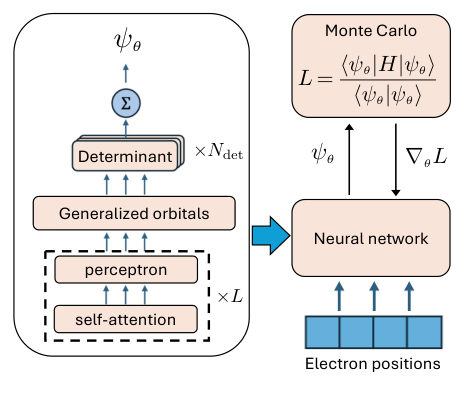
<figcaption class="paper-figure-caption"><b>Fig 1.</b> FIG. 1. Self-attention neural network and VMC: Illus- tration of our self-attention architecture (left), and its role inside the VMC algorithm (right).</figcaption>
</figure>
<figure class="paper-figure-card">
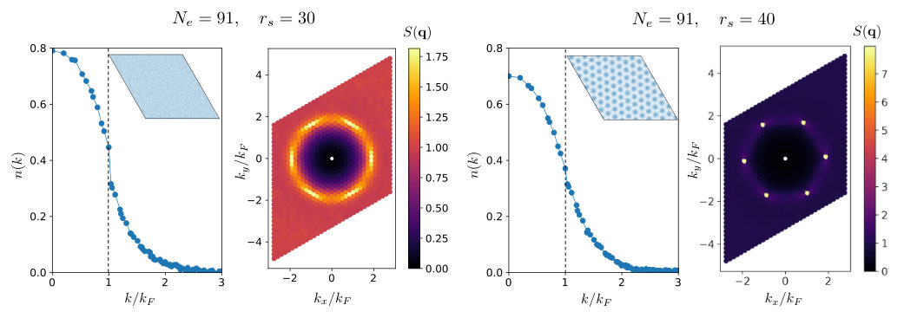
<figcaption class="paper-figure-caption"><b>Fig 2.</b> FIG. 2. Momentum space occupation and structure factor. Left panels: for rs = 30, the system displays metallic behavior, as signaled by the sharp Fermi surface discontinuity in the momentum space occupations n(k). Right panels: for rs = 40, the electrons form a crystalline state (see the density snapshot in the inset). Correspondingly, prominent Bragg peaks appear in the structure factor S(q).</figcaption>
</figure>
<figure class="paper-figure-card">
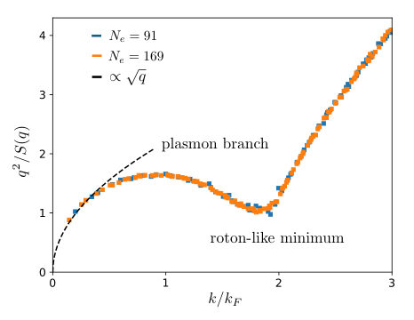
<figcaption class="paper-figure-caption"><b>Fig 3.</b> FIG. 3. Collective modes (rs = 30): the energy q2/S(q) provides a variational upper bound on the dispersion of the collective modes for the HEG ground state. The plasmon branch ∝√q at small q evolves into a roton-like minimum around 2kF associated to the incipient crystalline order. The quantitative agreement across system sizes certifies accuracy in approaching the thermodynamic limit.</figcaption>
</figure>
</div>
<p><strong>Summary.</strong> The authors demonstrate that self-attention neural networks can generate highly accurate variational wavefunctions for the 2D homogeneous electron gas. By applying this method to large systems (up to N=169), they achieve energies competitive with state-of-the-art DMC and accurately recover complex collective excitations like plasmons and rotons, proving scalability.</p>
<p><strong>Why it may be interesting.</strong> This work pushes the boundary of computational quantum chemistry by applying advanced machine learning techniques (self-attention) to solve fundamental problems in strongly correlated electron systems, offering a scalable alternative to traditional high-accuracy methods like DMC.</p>
<details>
<summary>Detailed structure</summary>
<p><strong>Main problem.</strong> The primary challenge is determining if self-attention wavefunctions can maintain high accuracy and scalability when applied to large quantum systems, surpassing traditional variational ansatze.</p>
<p><strong>Main result.</strong> The method successfully yields systematically lower energies than state-of-the-art DMC for up to 169 particles in the 2D HEG, demonstrating convergence towards the thermodynamic limit.</p>
<p><strong>Method.</strong> Variational Monte Carlo (VMC) is employed using a self-attention neural network architecture to generate highly expressive variational wavefunctions ($\psi_	heta$).</p>
<p><strong>Model / system.</strong> The study models the two-dimensional homogeneous electron gas (HEG) of spin-polarized electrons, governed by a standard Coulomb interaction Hamiltonian.</p>
<p><strong>Key observables.</strong> Ground state energy ($E$), momentum distribution $n(\mathbf{k})$, static structure factor $S(q)$, and collective mode dispersion $\epsilon(q)$.</p>
<p><strong>Important parameters / regimes.</strong> System sizes up to $N=169$ particles, interaction strength controlled by the dimensionless density parameter $r_s$ (e.g., $r_s=30$ or $r_s=40$).</p>
<p><strong>Assumptions / limitations.</strong> The wavefunction is constructed as an antisymmetric fermionic determinant using generalized orbitals derived from the self-attention mechanism.</p>
<p><strong>Figures summary.</strong> Figures illustrate the self-attention architecture, momentum occupation $n(k)$ showing metallic behavior, and structure factor $S(q)$ revealing plasmon and roton features in the liquid phase.</p>
<p><strong>Paper structure.</strong> The paper introduces the self-attention approach for wavefunctions, applies it to the HEG Hamiltonian, calculates ground state energies via VMC, and then analyzes correlated observables like $S(q)$ and $\epsilon(q)$ across varying system sizes to prove convergence.</p>
</details>
<details>
<summary>Abstract</summary>
<p>Self-attention neural networks provide powerful variational wavefunctions that surpass the expressivity of traditional variational ansatze. This expressivity, however, comes with increased computational complexity, raising a pressing question about scalability -- can such wavefunctions retain their accuracy at large system sizes? We apply self-attention wavefunctions to the two-dimensional homogeneous electron gas for up to N=169 particles, obtaining energies systematically lower than state-of-the-art DMC. Direct access to the ground state wavefunction further lets us recover the full collective-mode dispersion of the liquid phase, from the small-q plasmon branch to a roton-like minimum near q=2k_F. Observables at N=91 and N=169 are in near-perfect agreement, indicating convergence to the thermodynamic limit.</p>
</details>
<p><sub><a href="#top">↑ back to top</a></sub></p>

<p><a id="paper-2607.08138"></a></p>
<h3 id="adaptive-qubit-freezing-enables-robust-graph-partitioning-for-divide-and-conquer-qaoa"><a href="http://arxiv.org/abs/2607.08138v1">Adaptive Qubit Freezing Enables Robust Graph Partitioning for Divide-and-Conquer QAOA</a></h3>
<p><strong>Authors:</strong> Sokea Sang, Leanghok Hour, Dongmin Kim, Youngsun Han<br>
<strong>Type:</strong> theory · <strong>Category:</strong> quantum information and computing · <strong>PDF:</strong> <a href="https://arxiv.org/pdf/2607.08138v1">https://arxiv.org/pdf/2607.08138v1</a><br>
<strong>Analysis basis:</strong> full PDF text, analyzed in chunks</p>
<div class="figure-strip-hint">↔ Scroll figures horizontally</div>
<div class="paper-figures-scroll">
<figure class="paper-figure-card">
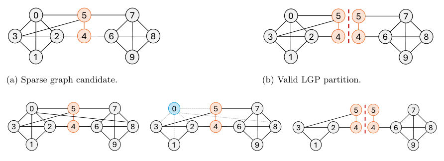
<figcaption class="paper-figure-caption"><b>Fig 1.</b> Figure 1: Overview of the FrozenLGP Partitioning Mechanism. (a) A standard graph exceeding the NISQ qubit budget, with nodes 4 and 5 identified as a potential separator path. (b) Standard LGP successfully bipartitions the sparse graph into two sub-circuits that share the separator nodes 4 and 5; these separator vertices are duplicated into both sub-circuits and re-merged by the MDR step, so they appear in both halves of (b) and (e). (c) In a denser graph, additional crossing edges prevent the separator path from disconnecting the network, causing standard LGP to fail. (d) FrozenLGP identifies a crossing node (Node 0, highlighted in blue) and classically freezes it (details in section 2.2),...</figcaption>
</figure>
<figure class="paper-figure-card">
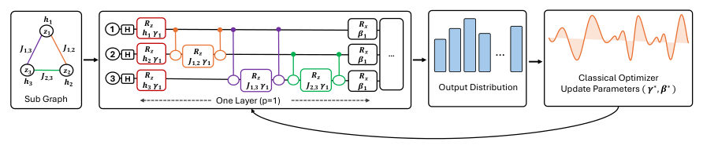
<figcaption class="paper-figure-caption"><b>Fig 2.</b> Figure 2: Schematic of a 1-layer (p = 1) QAOA circuit with linear bias terms. The circuit initializes an equal superposition via Hadamard gates. The problem unitary is then applied, explicitly showing the local linear bias rotations Rz(hiγ1) followed by the pairwise edge coupling rotations Rz(Ji,jγ1) implemented via CNOT cascades. A mixing layer of Rx(β1) rotations concludes the quantum evo- lution. The measured output distribution is fed into a classical optimizer, which iteratively updates the variational parameters (γ∗, β∗) to minimize the cost Hamiltonian.</figcaption>
</figure>
<figure class="paper-figure-card">
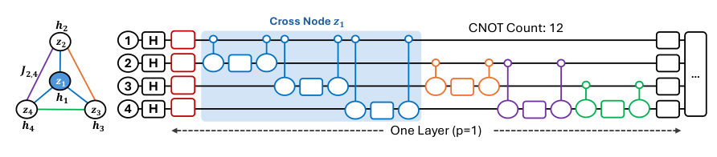
<figcaption class="paper-figure-caption"><b>Fig 3.</b> Figure 3: Standard QAOA circuit for a fully active 4-node network. Node z1 acts as a central &quot;cross node&quot; connected to all other qubits (z2, z3, z4). Mapping this fully quantum topology requires 12 CNOT gates for a single QAOA layer (p = 1), with the blue-shaded region highlighting the extensive entangling overhead generated solely by z1.</figcaption>
</figure>
<figure class="paper-figure-card">
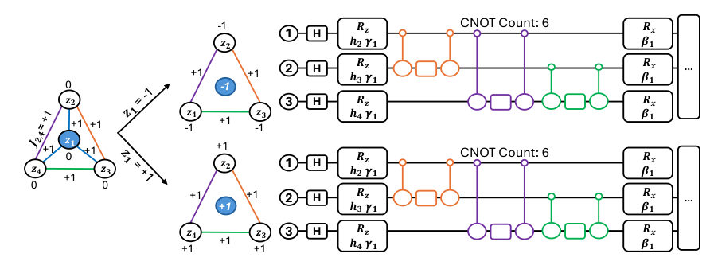
<figcaption class="paper-figure-caption"><b>Fig 4.</b> Figure 4: Circuit simplification via Qubit Freezing. By classically freezing z1 to either +1 (left) or −1 (right), the node is removed from the quantum circuit. The entangling overhead is eliminated (reducing the CNOT count from 12 to 6). The original coupling strengths associated with z1 are folded into the local Rz(hiγ1) rotation gates of the surviving active qubits (z2, z3, z4).</figcaption>
</figure>
<figure class="paper-figure-card">
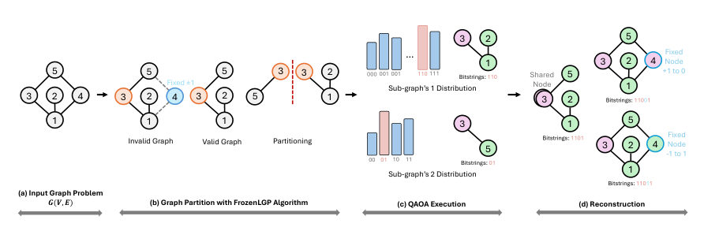
<figcaption class="paper-figure-caption"><b>Fig 5.</b> Figure 5: Overall architecture and workflow of the FrozenLGP pipeline. For simplicity and visu- alization purposes, we illustrate the pipeline on a small five-vertex graph that exhibits an invalid separator configuration and is subsequently recovered by FrozenLGP through adaptive qubit freez- ing. (a) The process begins with a input graph G(V,E) whose size exceeds the available hardware qubit budget. (b) The graph is processed by the FrozenLGP algorithm, which first attempts standard Large Graph Partitioning (LGP) and subsequently applies adaptive qubit freezing to recover valid bipartitions on dense topologies. If a valid partition is successfully identified within the freeze budget, the...</figcaption>
</figure>
</div>
<p><strong>Summary.</strong> The paper introduces FrozenLGP, an adaptive technique designed to make graph partitioning robust for QAOA on limited quantum hardware. It overcomes the failure of standard divide-and-conquer methods on dense graphs by identifying and 'freezing' critical vertices using max-flow computations. This process preserves the problem's energy structure by folding interactions into local bias terms, enabling full coverage and improved noise resilience.</p>
<p><strong>Why it may be interesting.</strong> This work directly addresses hardware limitations (qubit connectivity and depth) in quantum algorithms by providing a systematic, mathematically rigorous method to adapt problem decomposition for NISQ devices.</p>
<details>
<summary>Detailed structure</summary>
<p><strong>Main problem.</strong> Developing robust methods for solving combinatorial optimization problems, like MaxCut, using QAOA on near-term quantum devices when the problem graph is too large or highly connected for standard decomposition techniques.</p>
<p><strong>Main result.</strong> The proposed FrozenLGP framework achieves 100% decomposition coverage across tested graphs by adaptively freezing obstructing vertices and folding their interactions into linear bias terms in the Hamiltonian, significantly outperforming baseline methods on dense instances.</p>
<p><strong>Method.</strong> FrozenLGP identifies minimum-vertex cuts using max-flow to find obstructing nodes; these nodes are classically frozen, and their energetic contributions are preserved by updating local bias fields (Ising field) of neighboring active qubits.</p>
<p><strong>Model / system.</strong> The model is QAOA applied to combinatorial optimization problems mapped onto an Ising Hamiltonian ($H_P$). The physical system involves near-term quantum hardware constraints regarding qubit capacity and gate depth.</p>
<p><strong>Key observables.</strong> Decomposition Coverage (aiming for 100%), Approximation Quality ($\langle H_P 
angle$), Circuit Depth, and Number of two-qubit entangling gates (CNOTs).</p>
<p><strong>Important parameters / regimes.</strong> Graph size (up to 10,000 vertices), connectivity density, and the budget parameter ($B_f$) controlling the freezing process.</p>
<p><strong>Assumptions / limitations.</strong> The core assumption addressed is that standard divide-and-conquer QAOA fails when small vertex separators do not exist; FrozenLGP overcomes this by enforcing partitionability via freezing.</p>
<p><strong>Figures summary.</strong> Figures illustrate the mechanism: showing how standard LGP partitions graphs, how failure occurs on dense graphs, and finally demonstrating FrozenLGP identifying and freezing a crossing node while folding interactions into bias terms to maintain circuit validity.</p>
<p><strong>Paper structure.</strong> The paper introduces the limitations of DC-QAOA, proposes FrozenLGP as an adaptive framework using min-cut/max-flow for vertex identification, details the Hamiltonian modification via bias folding, validates performance through coverage metrics and noise simulations, and concludes with resource comparisons against monolithic QAOA.</p>
</details>
<details>
<summary>Abstract</summary>
<p>Divide-and-conquer variants of the Quantum Approximate Optimization Algorithm (QAOA) provide a promising route for executing combinatorial optimization problems beyond the qubit capacity of near-term quantum devices. However, existing approaches rely on the existence of small vertex separators and fail entirely on dense or highly connected graphs where such decompositions do not exist. We introduce Frozen Large Graph Partitioning (FrozenLGP), an adaptive decomposition framework that transforms partitionability from an assumption into an enforceable property. When standard partitioning fails, FrozenLGP identifies the minimum set of obstructing vertices through a minimum-vertex-cut computation based on max-flow and classically freezes their spin assignments. The energetic contributions of the removed interactions are rigorously preserved by folding them into linear bias terms in the Ising Hamiltonian of neighboring active qubits. Across graph sizes up to 10,000 vertices and multiple topology families, FrozenLGP achieves 100\% decomposition coverage, compared with 4.6\% for the standard divide-and-conquer baseline on high-connectivity instances. End-to-end MaxCut experiments demonstrate that FrozenLGP preserves approximation quality on instances already solvable by conventional divide-and-conquer QAOA while extending applicability to previously unsupported graphs, and outperforming alternative full-coverage decomposition strategies. Noise simulations further show improved robustness arising from reduced entangling-gate requirements. These results establish FrozenLGP as a topology-robust front end for distributed QAOA on near-term quantum hardware.</p>
</details>
<p><sub><a href="#top">↑ back to top</a></sub></p>

<p><a id="paper-2607.08548"></a></p>
<h3 id="an-effective-quantum-hoare-logic-for-hybrid-quantum-programs-with-unbounded-loops"><a href="http://arxiv.org/abs/2607.08548v1">An Effective Quantum Hoare Logic for Hybrid Quantum Programs with Unbounded Loops</a></h3>
<p><strong>Authors:</strong> Christophe Chareton, Jad Issa, Romain Péchoux<br>
<strong>Type:</strong> theory · <strong>Category:</strong> quantum information and computing · <strong>PDF:</strong> <a href="https://arxiv.org/pdf/2607.08548v1">https://arxiv.org/pdf/2607.08548v1</a><br>
<strong>Analysis basis:</strong> full PDF text, analyzed in chunks</p>
<div class="figure-strip-hint">↔ Scroll figures horizontally</div>
<div class="paper-figures-scroll">
<figure class="paper-figure-card">
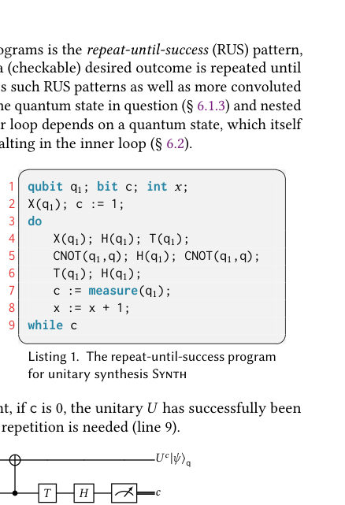
<figcaption class="paper-figure-caption"><b>Fig 1.</b> Fig. 1. The circuit for the RUS unitary synthesis of 𝑈in Listing 1.</figcaption>
</figure>
</div>
<p><strong>Summary.</strong> This paper presents a novel quantum Hoare logic designed to statically analyze hybrid quantum programs containing unbounded loops. The core innovation is the use of Integer Hybrid Path-Sums (IHPS) to symbolically track both quantum states and classical integer counts. This allows for the first semi-automated resource estimation tool for these complex, industrially relevant quantum computing models.</p>
<p><strong>Why it may be interesting.</strong> This work provides essential formal tools for analyzing complex, real-world hybrid quantum algorithms that are necessary before deploying such systems on actual hardware.</p>
<details>
<summary>Detailed structure</summary>
<p><strong>Main problem.</strong> Developing a static analysis solution for hybrid quantum-classical algorithms that incorporate complex control structures like unbounded loops.</p>
<p><strong>Main result.</strong> The authors introduce Integer Hybrid Path-Sums (IHPS) and a corresponding non-branching, effective quantum Hoare logic capable of providing both functional correctness guarantees and resource consumption estimation for such programs.</p>
<p><strong>Method.</strong> They extend path-sums to IHPS to symbolically represent infinite-dimensional Classical-Quantum states, enabling the formulation of an invariant-based loop analysis rule within a novel quantum Hoare logic framework.</p>
<p><strong>Model / system.</strong> The focus is on hybrid quantum-classical algorithms running on theoretical models (like $   ext{HQbricks}^\infty$), involving sequences of unitary operations combined with classical control flow and unbounded integer loops.</p>
<p><strong>Key observables.</strong> Functional correctness, Almost-Sure Termination (AST), and expected resource consumption (e.g., expected number of gates or loop iterations).</p>
<p><strong>Important parameters / regimes.</strong> The analysis handles the complexity introduced by unbounded while loops and the interaction between quantum superpositions and classical integer counters.</p>
<p><strong>Assumptions / limitations.</strong> Previous QHLs are insufficient due to lack of expressiveness for hybridization or handling unbounded recursion; the solution relies on IHPS to manage this complexity.</p>
<p><strong>Figures summary.</strong> One figure illustrates the circuit diagram for a repeat-until-success (RUS) unitary synthesis program, which is used as an example in the analysis.</p>
<p><strong>Paper structure.</strong> The paper introduces IHPS as the core representation, develops the quantum Hoare logic based on transformations of these sums, proves soundness via induction over program structure, and details loop handling using invariant rules.</p>
</details>
<details>
<summary>Abstract</summary>
<p>While quantum hardware remains limited, hybrid quantum-classical algorithms with complex control structures, including unbounded loops, are emerging, posing new challenges for quantum program analysis, including the accurate estimation of the resource consumption of a given program. Meanwhile, precise analysis techniques such as symbolic execution have largely left out hybridization and unbounded recursion. On the other hand, current quantum Hoare logics that generally support them are lacking in expressiveness and miss out on efficient computational equational reasoning that could be implemented in a semi-automated tool. This leaves a gap awaiting to be filled. In this work, we answer this challenge with the first semi-automated static analysis solution combining effective functional verification and resource (termination or cost) estimation for hybrid quantum programs with unbounded loops. Towards that end, we introduce integer hybrid path-sums (IHPS), extending path-sums to handle unbounded while loops, as a representation of possible executions of a program. A generic strategy for determining termination and expected resource consumption via loop invariants is also proposed and illustrated on several examples. Finally, the solution is implemented as a semi-automatic Haskell program. This work is the first step toward the design of a complete static resource analysis tool for hybrid quantum programs, essential for the development of real-world quantum computing.</p>
</details>
<p><sub><a href="#top">↑ back to top</a></sub></p>

<p><a id="paper-2607.08102"></a></p>
<h3 id="decomposition-based-qaoa-for-maximum-coverage-location-problem-in-satellite-constellation-design"><a href="http://arxiv.org/abs/2607.08102v1">Decomposition-Based QAOA for Maximum Coverage Location Problem in Satellite Constellation Design</a></h3>
<p><strong>Authors:</strong> Divya Sisodiya, Amiratabak Bahengam, Hang Woon Lee, Hao Chen<br>
<strong>Type:</strong> both · <strong>Category:</strong> quantum information and computing · <strong>PDF:</strong> <a href="https://arxiv.org/pdf/2607.08102v1">https://arxiv.org/pdf/2607.08102v1</a><br>
<strong>Analysis basis:</strong> full PDF text, analyzed in chunks</p>
<div class="figure-strip-hint">↔ Scroll figures horizontally</div>
<div class="paper-figures-scroll">
<figure class="paper-figure-card">
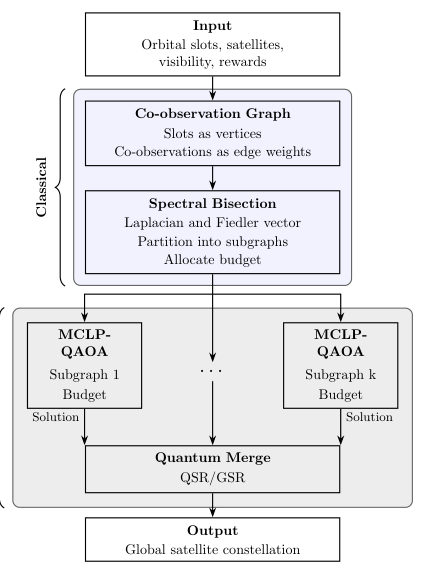
<figcaption class="paper-figure-caption"><b>Fig 1.</b> FIGURE 1: Decomposition-Based QAOA Framework Overview.</figcaption>
</figure>
<figure class="paper-figure-card">
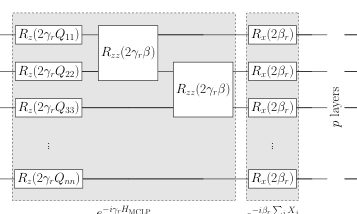
<figcaption class="paper-figure-caption"><b>Fig 2.</b> FIGURE 2: MCLP-QAOA circuit for subgraph Gℓwith p problem and mixer layers using optimized (γr, βr) parameters.</figcaption>
</figure>
<figure class="paper-figure-card">
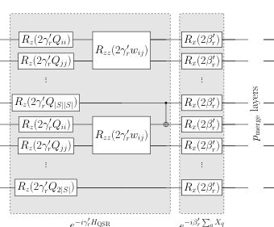
<figcaption class="paper-figure-caption"><b>Fig 3.</b> FIGURE 3: QSR circuit with two separator copies applying pmerge problem and mixer layers using cross-copy CNOTs and Rzz co-observation coupling gates.</figcaption>
</figure>
<figure class="paper-figure-card">
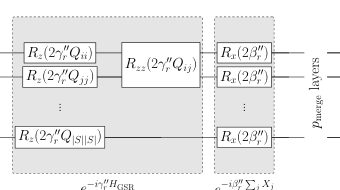
<figcaption class="paper-figure-caption"><b>Fig 4.</b> FIGURE 4: GSR circuit applying pmerge problem and mixer layers with coverage bias, co-observation coupling, and cardinality constraints using Rz and Rzz gates.</figcaption>
</figure>
<figure class="paper-figure-card">
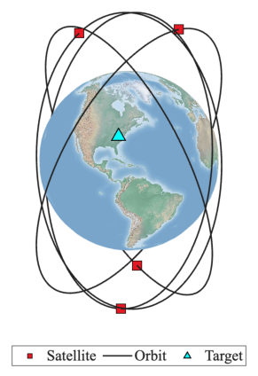
<figcaption class="paper-figure-caption"><b>Fig 5.</b> FIGURE 5: Satellite constellation geometry showing satel- lites in orbital slots and a single ground target.</figcaption>
</figure>
</div>
<p><strong>Summary.</strong> This paper proposes a novel, scalable quantum approach using decomposition methods to solve the computationally hard Maximal Covering Location Problem (MCLP) for satellite constellation design. By partitioning the large problem into smaller subproblems solved via QAOA and then merging the results, the authors overcome the limitations of current quantum hardware on massive instances. The framework shows promise by maintaining high coverage performance while achieving better scalability than classical or standard quantum methods.</p>
<p><strong>Why it may be interesting.</strong> While focused on optimization rather than fundamental physics, the methodology—applying divide-and-conquer techniques to map a complex combinatorial problem onto NISQ devices—is highly relevant for developing scalable quantum algorithms for physical simulations in condensed matter or AMO contexts.</p>
<details>
<summary>Detailed structure</summary>
<p><strong>Main problem.</strong> The core problem is optimizing satellite constellation design by solving the NP-hard Maximal Covering Location Problem (MCLP) to maximize ground coverage.</p>
<p><strong>Main result.</strong> A decomposition-based QAOA framework demonstrates better scalability and competitive coverage performance for large MCLP instances compared to standard quantum or classical solvers.</p>
<p><strong>Method.</strong> The method uses spectral bisection on a co-observation graph to partition the large MCLP into smaller subproblems, which are then solved independently using QAOA circuits before being combined via quantum reconstruction strategies (GSR/QSR).</p>
<p><strong>Model / system.</strong> The system is an Earth observation satellite constellation modeled by orbital slots and ground targets. The problem is formulated as an Ising Hamiltonian derived from the MCLP constraints, which are then mapped onto a QUBO representation.</p>
<p><strong>Key observables.</strong> Coverage Ratio (Approximation ratio $
ho$), Runtime ($T$), and Optimality Gap.</p>
<p><strong>Important parameters / regimes.</strong> Number of orbital slots ($J$), number of satellites ($N$), maximum subgraph size ($q_{	ext{max}}$), and circuit depth ($p$).</p>
<p><strong>Assumptions / limitations.</strong> The approach assumes that decomposing the problem into smaller, hardware-tractable subproblems mitigates the exponential scaling issues faced by standard QAOA on large instances. The use of GSR is shown to outperform QSR.</p>
<p><strong>Figures summary.</strong> Figures illustrate the decomposition framework flow; Figure 12 compares approximation ratios ($
ho$) between IBM hardware and OpenQAOA simulator, showing noise effects; Table VIII summarizes mean runtimes with 95% Confidence Intervals for various visibility matrix instances.</p>
<p><strong>Paper structure.</strong> The paper first establishes MCLP as an intractable problem. It then introduces the decomposition-based QAOA framework, detailing graph construction via spectral bisection and solving subproblems using QAOA. Finally, it compares the performance of different merging strategies (GSR vs QSR) on both simulated and actual quantum hardware.</p>
</details>
<details>
<summary>Abstract</summary>
<p>An increase in earth observation missions has increased the demand of efficient design and optimization of satellite constellations. Maximizing coverage of the target while effectively utilizing the limited orbital resources is one of the critical design challenges for complex combinatorial optimization problems. The maximal covering location problem (MCLP), serves as a base for orbital coverage modeling, is NP-hard and computationally intractable for large-constellation instances. Using heuristics, metaheuristics, and mixed-integer linear programming, classical solvers have achieved optimal or near-optimal results, yet their scalability is limited as the problem size increases. Quantum computing advancements, including the quantum approximate optimization algorithms, offer a potential solution to NP-hard combinatorial optimization problems. Current quantum hardware limitations, such as low qubit counts and circuit depth, restrict solutions for small-scale instance problems. To address this challenge, this paper proposes a scalable quantum optimization framework for MCLP in satellite constellation design. A decomposition-based quantum methodology is proposed, in which large MCLP instances are partitioned into subgraphs by classical decomposition, optimized independently via quantum optimization circuits, and combined using quantum reconstruction strategies. Computational results across different constellation sizes reveal better scalability in less time while maintaining competitive coverage performance compared to classical solvers.</p>
</details>
<p><sub><a href="#top">↑ back to top</a></sub></p>

<p><a id="paper-2607.08200"></a></p>
<h3 id="efficient-high-dimensional-quantum-circuit-synthesis-from-multi-controlled-gates-to-isometries-and-quantum-channels"><a href="http://arxiv.org/abs/2607.08200v1">Efficient High-Dimensional Quantum Circuit Synthesis: From Multi-Controlled Gates to Isometries and Quantum Channels</a></h3>
<p><strong>Authors:</strong> Gui-Long Jiang<br>
<strong>Type:</strong> theory · <strong>Category:</strong> quantum information and computing · <strong>PDF:</strong> <a href="https://arxiv.org/pdf/2607.08200v1">https://arxiv.org/pdf/2607.08200v1</a><br>
<strong>Analysis basis:</strong> full PDF text, analyzed in chunks</p>
<div class="figure-strip-hint">↔ Scroll figures horizontally</div>
<div class="paper-figures-scroll">
<figure class="paper-figure-card">
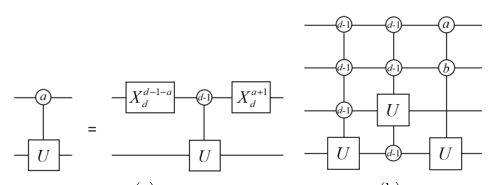
<figcaption class="paper-figure-caption"><b>Fig 1.</b> FIG. 1. (a) Circuit representation of Eq. (5) for the case (n, i, j) = (2, 1, 2). The circle represents the control qudit. (b) Quantum circuit symbols of C4 (1,2,3),4(U), C4 (1,2,4),3(U),</figcaption>
</figure>
<figure class="paper-figure-card">
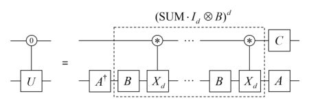
<figcaption class="paper-figure-caption"><b>Fig 2.</b> FIG. 4. Equivalent quantum circuit for the controlled U gate based on Eq. (13).</figcaption>
</figure>
<figure class="paper-figure-card">
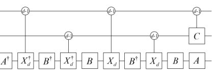
<figcaption class="paper-figure-caption"><b>Fig 3.</b> FIG. 5. Equivalent quantum circuit for the 2-controlled U gate.</figcaption>
</figure>
<figure class="paper-figure-card">
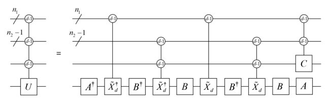
<figcaption class="paper-figure-caption"><b>Fig 4.</b> FIG. 6. Equivalent quantum circuit for the (n −1)-controlled U gate. The line with a slash (/) represents a quantum bus (i.e., a collection of multiple qudits); the numbers n1 = ⌈n−1</figcaption>
</figure>
<figure class="paper-figure-card">
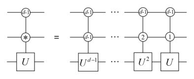
<figcaption class="paper-figure-caption"><b>Fig 5.</b> FIG. 7. Quantum circuit symbol for the gate that applies U a to the target qudit when the two control qudits are in |d −1, a⟩, for a = 1, . . . , d −1.</figcaption>
</figure>
</div>
<p><strong>Summary.</strong> This paper presents efficient methods to synthesize complex multi-controlled gates in qudit quantum computing. It significantly improves the theoretical upper bounds on gate counts required for these operations, achieving polynomial scaling in the number of qubits ($O(n^2)$). The results are vital for advancing hardware implementations utilizing higher-dimensional quantum systems.</p>
<p><strong>Why it may be interesting.</strong> The work provides concrete, optimized circuit decompositions for high-dimensional quantum operations, which is crucial for designing practical algorithms on qudit architectures that move beyond simple qubit models.</p>
<details>
<summary>Detailed structure</summary>
<p><strong>Main problem.</strong> The paper addresses the challenge of efficiently synthesizing quantum circuits for multi-controlled gates, particularly $(n-1)$-controlled unitaries, in qudit systems.</p>
<p><strong>Main result.</strong> It achieves improved gate count bounds, reducing the required CINC gates for general $(n-1)$-controlled unitaries to $O(n^2)$ and special unitaries to $O(n)$.</p>
<p><strong>Method.</strong> The authors develop novel circuit synthesis schemes by decomposing complex controlled operations into products of fundamental building blocks like CINC gates and single-qudit gates.</p>
<p><strong>Model / system.</strong> The model is based on qudit systems ($d$-level quantum computing) operating in a Hilbert space $\mathcal{H}^{\otimes n}_d$. The focus is on constructing circuits for controlled unitaries, isometries, and quantum channels.</p>
<p><strong>Key observables.</strong> Gate counts (CINC, GCX), circuit complexity bounds, and theoretical lower bounds on gate requirements.</p>
<p><strong>Important parameters / regimes.</strong> The number of qudits ($n$), the dimension $d$, and the control structure (e.g., $(n-1)$-controlled).</p>
<p><strong>Assumptions / limitations.</strong> The analysis relies on decomposing unitaries into specific controlled gates and assumes that classical control after measurement is allowed for channel synthesis.</p>
<p><strong>Figures summary.</strong> Figures illustrate quantum circuits for multi-controlled qudit gates, including representations for $C_{1,2}^{2}(U)$ using both CINC/single-qudit gates and $   ext{SUM}$ gates. Other figures detail circuit structures for general $(n-1)$-controlled operations.</p>
<p><strong>Paper structure.</strong> The paper progresses by first establishing efficient decompositions for controlled unitaries (e.g., $C_{1,2}^{2}(U)$), then generalizing these results to arbitrary $(n-1)$-controlled gates with improved complexity bounds, and finally deriving theoretical lower bounds on the required gate counts.</p>
</details>
<details>
<summary>Abstract</summary>
<p>Circuit synthesis of multi-controlled gates is crucial for qudit ($d$-level) quantum computing. This paper presents efficient synthesis schemes that reduce the elementary gate count for multi-controlled single-qudit gates. For synthesizing general $(n-1)$-controlled unitaries on $n$ qudits, we reduce the controlled-increment (CINC) and generalized controlled-$X$ (GCX) gate counts to $O(n^2)$, improving upon existing $O(n^{2+\log_2 d})$ CINC and $O(n^3)$ GCX bounds. For $(n-1)$-controlled special unitaries, this complexity is further reduced to $O(n)$. By utilizing the proposed circuit, we present qudit-based circuit constructions for isometries and quantum channels from $n$ to $m$ qudits. When specialized to general $n$-qudit unitaries, our construction requires fewer CINC gates than previous results. Moreover, for the first time, we present a circuit synthesis scheme for single-controlled gates using SUM gates and single-qudit gates when $d$ is prime. This enables all CINC-based circuits for various quantum operations to be converted into SUM-gate circuits while preserving the same asymptotic complexity. Finally, we establish a theoretical lower bound on the number of SUM and CINC gates required to synthesize general $n$-qudit unitaries.</p>
</details>
<p><sub><a href="#top">↑ back to top</a></sub></p>

<p><a id="paper-2607.08047"></a></p>
<h3 id="nuclear-many-body-systems-as-benchmarks-for-quantum-computing"><a href="http://arxiv.org/abs/2607.08047v1">Nuclear Many-Body Systems as Benchmarks for Quantum Computing</a></h3>
<p><strong>Authors:</strong> Sota Yoshida, Alessandro Baroni, Takayuki Miyagi, Ermal Rrapaj<br>
<strong>Type:</strong> theory · <strong>Category:</strong> quantum information and computing · <strong>PDF:</strong> <a href="https://arxiv.org/pdf/2607.08047v1">https://arxiv.org/pdf/2607.08047v1</a><br>
<strong>Analysis basis:</strong> full PDF text, analyzed in chunks</p>
<div class="figure-strip-hint">↔ Scroll figures horizontally</div>
<div class="paper-figures-scroll">
<figure class="paper-figure-card">
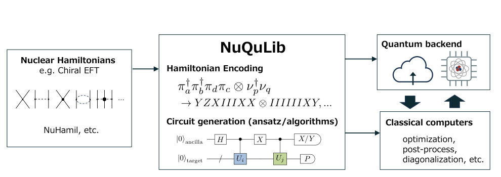
<figcaption class="paper-figure-caption"><b>Fig 1.</b> FIG. 1. NuQuLib workflow: A typical pathway starts from a nuclear interaction based on chiral effective field theory (ChEFT) [30–32], which is available with NuHamil [33] code and provides an input for various public codes such as im- srg++ [34], KSHELL [35], and NuclearToolkit.jl [36]. NuQuLib provides a bridge to quantum computing for nuclear physics problems by mapping the Hamiltonian to qubits. As such, it provides the encoded nuclear Hamiltonian and quantum circuits for state preparation ansatz and/or quantum algorithms.</figcaption>
</figure>
<figure class="paper-figure-card">
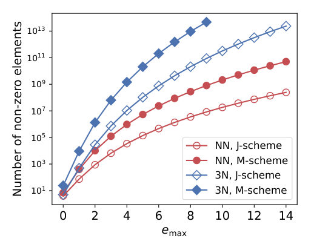
<figcaption class="paper-figure-caption"><b>Fig 2.</b> FIG. 2. Number of non-zero matrix elements in nuclear two-body (NN) and three-body (3N) interactions within the J-scheme or M-scheme basis representations. The horizontal axis represents the emax truncation defined in Sec. V specify- ing the model space size.</figcaption>
</figure>
<figure class="paper-figure-card">
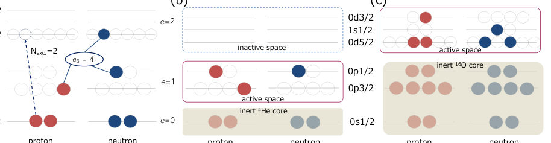
<figcaption class="paper-figure-caption"><b>Fig 3.</b> FIG. 3. Schematic illustration of nuclear configuration-interaction model spaces in the M-scheme representation. The single- particle basis states are labeled by the quantum numbers n, l, j, jz, and tz. Panel (a) shows a no-core shell-model space, where all nucleons are active and the harmonic-oscillator single-particle basis is truncated by (emax). The figure also illustrates the commonly used three-body matrix-element cutoff E3max, and a many-body excitation cutoff Nmax. The label e3 = 4 denotes the sum of single-particle e quanta associated with the three-body term shown schematically. The arrow with the dashed line shows an example of excitations carrying Nexc. = 2. Panels (b) and (c)...</figcaption>
</figure>
<figure class="paper-figure-card">
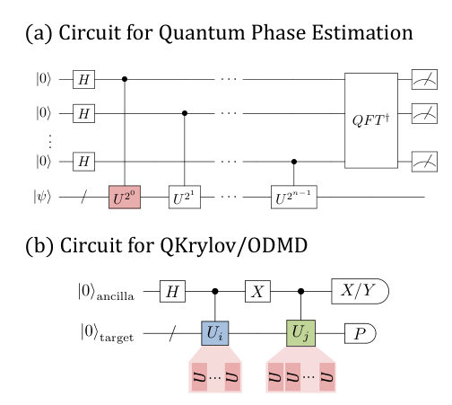
<figcaption class="paper-figure-caption"><b>Fig 4.</b> FIG. 4. Quantum circuits for the algorithms considered in this work. (a) Quantum Phase Estimation (QPE): The controlled time-evolution operator is applied conditioned on the state of the ancilla qubits, followed by the in- verse quantum Fourier transform (QFT†) to extract the eigenvalue information. (b) Quantum Krylov Subspace Method (QKrylov)/Observable Dynamic Mode Decomposi- tion (ODMD): The controlled time-evolution operator is ap- plied to construct non-orthogonal basis states, and the over- laps and Hamiltonian matrix elements are measured using the circuits shown.</figcaption>
</figure>
<figure class="paper-figure-card">
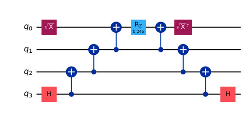
<figcaption class="paper-figure-caption"><b>Fig 5.</b> FIG. 5. Quantum circuit to implement the time- evolution operator for a pseudo two-body interaction term exp (−0.123iX0Z1Z2Y3).</figcaption>
</figure>
</div>
<p><strong>Summary.</strong> The paper develops NuQuLib, a comprehensive framework to translate realistic nuclear Hamiltonians from Chiral EFT into qubit circuits suitable for quantum computing. It systematically benchmarks three key quantum algorithms by estimating their resource costs (T-gates) for solving the many-body Schrödinger equation in atomic nuclei.</p>
<p><strong>Why it may be interesting.</strong> This work directly bridges advanced theoretical nuclear structure physics (ChEFT, shell model) with the practical requirements of near-term quantum computation, providing a crucial benchmark for future hardware development in fundamental physics simulations.</p>
<details>
<summary>Detailed structure</summary>
<p><strong>Main problem.</strong> The primary goal is to establish a systematic framework for benchmarking quantum algorithms designed to solve complex many-body problems arising in nuclear physics.</p>
<p><strong>Main result.</strong> The authors provide the NuQuLib software stack, which quantifies scaling trends and resource requirements (T-gate counts) for applying three major eigenvalue algorithms (QPE, QKrylov, ODMD) to realistic nuclear Hamiltonians.</p>
<p><strong>Method.</strong> A unified workflow maps second-quantized nuclear interactions (from Chiral EFT) into qubit Hamiltonians, allowing systematic comparison of quantum algorithm resource needs across different model spaces and interaction types.</p>
<p><strong>Model / system.</strong> The system is the atomic nucleus, modeled by realistic Hamiltonians derived from Chiral Effective Field Theory ($\chi$EFT), incorporating two-body (NN) and three-body (3N) interactions. Calculations span both no-core and valence-space formulations.</p>
<p><strong>Key observables.</strong> Resource requirements quantified in terms of T-gate counts and system size, alongside the energy eigenvalues ($E_i$) derived from solving $H|\Psi_i
angle = E_i|\Psi_i
angle$.</p>
<p><strong>Important parameters / regimes.</strong> The complexity scales significantly with interaction type (e.g., scaling as $N^4$ for NN and $N^6$ for 3N matrix elements).</p>
<p><strong>Assumptions / limitations.</strong> The framework relies on mapping fermionic operators to qubit Hamiltonians, necessitating approximations or truncations due to the rapid growth of matrix elements.</p>
<p><strong>Figures summary.</strong> Figure 1 illustrates the entire NuQuLib workflow: starting from a nuclear interaction (ChEFT) $
ightarrow$ Hamiltonian Encoding $
ightarrow$ Circuit generation for quantum algorithms. Figure 2 shows scaling of non-zero matrix elements based on model space truncation.</p>
<p><strong>Paper structure.</strong> The paper introduces the problem by detailing the physical inputs (ChEFT Hamiltonians, second quantization). It then presents the core contribution: a workflow to map these into qubit circuits and estimates resources for specific quantum algorithms ($    ext{QPE}$, $    ext{QKrylov}$, $    ext{ODMD}$), concluding with resource scaling analysis.</p>
</details>
<details>
<summary>Abstract</summary>
<p>We present a framework for benchmarking quantum algorithms for nuclear many-body systems based on realistic nuclear Hamiltonians such as chiral effective field theory. To this effect we introduce a workflow that maps nuclear interactions in second quantization formalism to qubit Hamiltonians. This enables the systematic construction of benchmark instances spanning no-core and valence-space formulations with two-body (NN) and selected three-body (3N) interactions. Then, we proceed to provide resource estimates for three representative eigenvalue algorithms: Quantum Phase Estimation, Quantum Krylov methods, and Observable Dynamic Mode Decomposition. We compare their resource requirements in terms of T-gate counts and system size, and examine the impact of model-space choices and many-body interactions. The primitives included in our analysis are Trotterization, Qubitization, and Quantum Singular Value Transformation. Our results quantify scaling trends across algorithms and problem classes, and provide a basis for consistent comparisons of quantum approaches to nuclear many-body problems. The implementation is provided by the NuQuLib software stack.</p>
</details>
<p><sub><a href="#top">↑ back to top</a></sub></p>

<p><a id="paper-2607.08220"></a></p>
<h3 id="quantum-linear-solvers-for-quantum-chemistry-prospects-of-exponential-quantum-advantage"><a href="http://arxiv.org/abs/2607.08220v1">Quantum linear solvers for quantum chemistry: prospects of exponential quantum advantage</a></h3>
<p><strong>Authors:</strong> Peniel Bertrand Tsemo, Kenji Sugisaki, Ishita Bhattacharjee, V. S. Prasannaa<br>
<strong>Type:</strong> theory · <strong>Category:</strong> quantum information and computing · <strong>PDF:</strong> <a href="https://arxiv.org/pdf/2607.08220v1">https://arxiv.org/pdf/2607.08220v1</a><br>
<strong>Analysis basis:</strong> full PDF text, analyzed in chunks</p>
<div class="figure-strip-hint">↔ Scroll figures horizontally</div>
<div class="paper-figures-scroll">
<figure class="paper-figure-card">
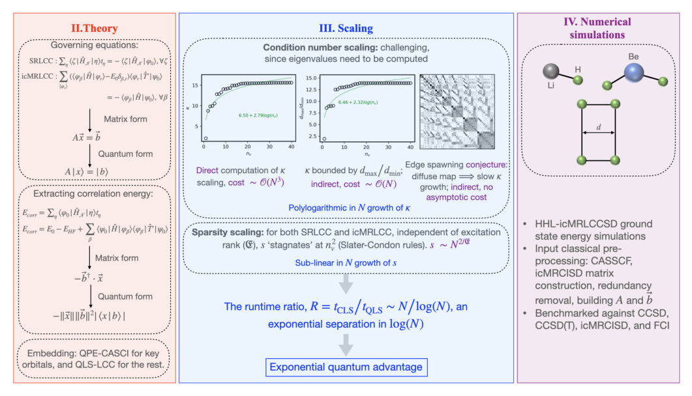
<figcaption class="paper-figure-caption"><b>Fig 1.</b> FIG. 1. Overview of the present work and organization (Section II onwards). Section II derives the working equations of single- and internally contracted multi-reference linearized coupled cluster theories, abbreviated as SRLCC and icMRLCC respectively, reformulates them for quantum linear solvers (QLSs), and proposes embedding quantum phase estimation-complete active space configuration interaction (QPE-CASCI) in QLS-LCC for large molecular calculations. Section III introduces three diagnostics for determining the condition number, κ, of the A matrix, which we find to scale as a polylogarithmic function of system size, N. We also show the expression for the sparsity, s, to be sub-linear in...</figcaption>
</figure>
<figure class="paper-figure-card">
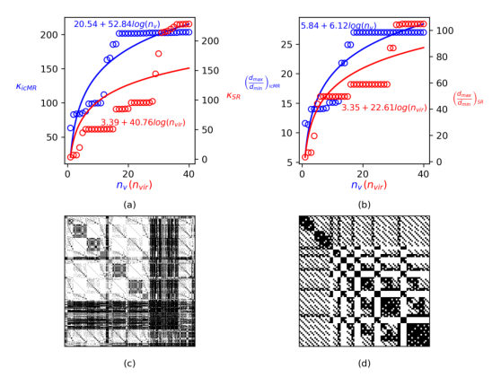
<figcaption class="paper-figure-caption"><b>Fig 2.</b> FIG. 2. Sub-figure (a) shows the scaling of condition number, κ, with the number of virtuals, nv(nvir), while sub-figure (b) presents the ratio of maximum and minimum diagonal entries of A, dmax  dmin scaling versus nv(nvir). ‘SR’ and ‘icMR’ refer to the quantities having been obtained using single-reference and internally contracted multi-reference linearized coupled cluster methods (in the singles and doubles approximation), respectively. dmax and dmin refer to maximum and minimum diagonal entries of A respectively. Sub-figures (c) and (d) de- pict the A matrix heat maps (non-zero matrix elements in black and zero values in white) for the single-reference and internally contracted...</figcaption>
</figure>
<figure class="paper-figure-card">
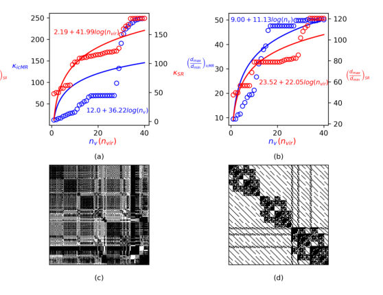
<figcaption class="paper-figure-caption"><b>Fig 3.</b> FIG. 5. (a) and (b): κ and dmax  dmin scaling as a func- tion of nv(nvir) respectively, (c) and (d): heatmaps of SRL- CCSD and icMRLCCSD A matrices respectively, for the BeH2 molecule in the cc-pVTZ basis. The SR and the icMR A matrices shown in the figure are of size 144 × 144 and 1756 × 1756 respectively. All definitions are the same as in Fig. 2</figcaption>
</figure>
<figure class="paper-figure-card">

<figcaption class="paper-figure-caption"><b>Fig 4.</b> FIG. 3. Sub-figure (a) illustrates the scaling of κ with nv(nvir), sub-figure (b) reports dmax  dmin scaling versus nv(nvir), whereas sub-figures (c) and (d) plot the SRLCCSD and icMRLCCSD A matrices respectively as heat maps. The SR and the icMR A matrices shown in the figure are of size 151×151 and 403×403 respectively. All the data is presented for the BeH+ 2 molecular ion in the cc-pVTZ basis. All defini- tions are the same as in Fig. 2</figcaption>
</figure>
<figure class="paper-figure-card">

<figcaption class="paper-figure-caption"><b>Fig 5.</b> FIG. 4. (a): Scaling of κ with nv(nvir), (b): dmax  dmin scaling versus nv(nvir), (c) and (d): SRLCCSD and icMRLCCSD A matrices’ heat maps respectively, all of them for the H4 molecule in the cc-pVTZ basis. The SR and the icMR A matrices shown in the figure are of size 99 × 99 and 351 × 351 respectively. All definitions are the same as in Fig. 2</figcaption>
</figure>
</div>
<p><strong>Summary.</strong> The paper investigates whether Quantum Linear Solvers can provide an exponential speedup for solving coupled cluster equations in quantum chemistry. By extending the QLS framework to multi-reference methods, the authors analyze the condition number scaling and find favorable polylogarithmic scaling. This strongly supports the potential for using quantum computers to tackle challenging electronic structure problems.</p>
<p><strong>Why it may be interesting.</strong> This work directly bridges advanced quantum chemistry methods (like MRLCC) with cutting-edge quantum algorithms (QLSs), providing a rigorous theoretical assessment of when and how quantum computation can accelerate chemical simulations beyond classical limits.</p>
<details>
<summary>Detailed structure</summary>
<p><strong>Main problem.</strong> Assessing the potential for exponential quantum advantage using Quantum Linear Solvers (QLSs) to solve complex linear systems arising from quantum chemistry calculations.</p>
<p><strong>Main result.</strong> The analysis shows consistent predictions of polylogarithmic condition number ($\kappa$) scaling and sub-linear sparsity scaling, supporting the prospect of an exponential quantum advantage for solving the LCC problem using QLSs.</p>
<p><strong>Method.</strong> The authors extend Quantum Linear Solvers (QLSs) from single-reference to multi-reference Coupled Cluster methods (QLS-icMRLCC). They analyze $\kappa$ scaling using three complementary diagnostics: direct calculation, ratio of diagonal entries, and structural analysis.</p>
<p><strong>Model / system.</strong> The study focuses on quantum chemistry calculations involving molecular systems, specifically linearizing the equations derived from Single-Reference (SRLCC) and Internally Contracted Multi-Reference Coupled Cluster methods (icMRLCC).</p>
<p><strong>Key observables.</strong> Condition number ($\kappa$) scaling with system size, sparsity ($s$) scaling of matrix $A$, and recovered ground state energies (error &lt; 0.009%).</p>
<p><strong>Important parameters / regimes.</strong> Weakly correlated regimes vs. strongly correlated regions; polylogarithmic $\kappa$ scaling.</p>
<p><strong>Assumptions / limitations.</strong> The analysis assumes that the structure of coupled cluster equations allows them to be recast as linear systems solvable by QLSs, and that efficient loading/state preparation is possible.</p>
<p><strong>Figures summary.</strong> Figures track condition numbers ($\kappa$) versus system size (atoms or virtual orbitals) for various molecular chains and methods, demonstrating scaling behavior.</p>
<p><strong>Paper structure.</strong> The paper first establishes the need to extend QLS-SRLCC to multi-reference forms (QLS-icMRLCC). It then analyzes $\kappa$ scaling using three diagnostics. Finally, it presents numerical calculations on model systems up to four atoms to validate the approach.</p>
</details>
<details>
<summary>Abstract</summary>
<p>Quantum linear solvers (QLSs) can offer the potential for exponential quantum advantage in solving quantum chemical problems, but its assessment hinges on determining the condition number ($κ$) scaling, which itself is computationally challenging. While a recent work applied the Harrow-Hassidim-Lloyd (HHL) algorithm to single-reference linearized coupled cluster equations (SRLCC), the validity of the HHL-SRLCC framework is restricted to weakly correlated regimes. A general treatment requires a formulation that can access strongly correlated regions. We thus begin by extending the QLS-SRLCC framework to its multi-reference form, which is based on the internally contracted multi-reference LCC method (QLS-icMRLCC). We then analyze $κ$ scaling using three complementary diagnostics that range from explicit computations to use of indirect structural indicators: (i) direct calculations of $κ$, (ii) scaling of the ratio of maximum to minimum diagonal entries of an A matrix, and (iii) structural analyses of the A matrices based on a recently proposed conjecture, which we adapt to the QLS-LCC problem. The three approaches yield consistent predictions, indicating a polylogarithmic $κ$ scaling in system size. This finding, when combined with our arguments on sub-linear scaling of sparsity, supports the prospects of exponential advantage using QLSs for the LCC problem. Finally, numerical calculations on potential energy curves of model systems containing up to four atoms recover the ground state energies with errors relative to benchmark classical methods not exceeding 0.009$\%$.</p>
</details>
<p><sub><a href="#top">↑ back to top</a></sub></p>

<p><a id="paper-2607.08298"></a></p>
<h3 id="wigner-symmetries-single-out-symmetric-wasserstein-distances-in-all-finite-dimensions"><a href="http://arxiv.org/abs/2607.08298v1">Wigner symmetries single out symmetric Wasserstein distances in all finite dimensions</a></h3>
<p><strong>Authors:</strong> Gergely Bunth<br>
<strong>Type:</strong> theory · <strong>Category:</strong> other · <strong>PDF:</strong> <a href="https://arxiv.org/pdf/2607.08298v1">https://arxiv.org/pdf/2607.08298v1</a><br>
<strong>Analysis basis:</strong> full PDF text, analyzed in chunks</p>
<div class="figure-strip-hint">↔ Scroll figures horizontally</div>
<div class="paper-figures-scroll">
<figure class="paper-figure-card">

<figcaption class="paper-figure-caption"><b>Fig 1.</b> Low-resolution page preview, page 2</figcaption>
</figure>
<figure class="paper-figure-card">

<figcaption class="paper-figure-caption"><b>Fig 2.</b> Low-resolution page preview, page 3</figcaption>
</figure>
<figure class="paper-figure-card">

<figcaption class="paper-figure-caption"><b>Fig 3.</b> Low-resolution page preview, page 4</figcaption>
</figure>
<figure class="paper-figure-card">

<figcaption class="paper-figure-caption"><b>Fig 4.</b> Low-resolution page preview, page 5</figcaption>
</figure>
<figure class="paper-figure-card">

<figcaption class="paper-figure-caption"><b>Fig 5.</b> Low-resolution page preview, page 6</figcaption>
</figure>
</div>
<p><strong>Summary.</strong> This paper rigorously characterizes symmetric quantum Wasserstein distances on finite-dimensional Hilbert spaces. It proves that multiple seemingly disparate symmetry conditions—including isometry group structure, representation invariance, and frame properties—are all equivalent ways of defining the same specific distance metric. This unifies several advanced mathematical tools to understand the geometry of quantum state space.</p>
<p><strong>Why it may be interesting.</strong> This work provides deep mathematical structure to optimal transport in quantum mechanics, linking fundamental symmetries of quantum evolution (Wigner symmetries) directly to the geometry of state spaces defined by generalized distances.</p>
<details>
<summary>Detailed structure</summary>
<p><strong>Main problem.</strong> The core problem is characterizing quantum Wasserstein distances whose isometry group is precisely the Wigner symmetries (unitary/antiunitary conjugations).</p>
<p><strong>Main result.</strong> Multiple mathematical notions of symmetry—geometric, representation-theoretic, operator-theoretic, and frame-theoretic—are proven to be equivalent conditions that characterize these specific symmetric quantum Wasserstein distances.</p>
<p><strong>Method.</strong> The analysis involves translating geometric invariance (isometries) into algebraic constraints on the cost operator, utilizing concepts from group representations (adjoint action) and frame theory (tight frames).</p>
<p><strong>Model / system.</strong> The study is set in finite-dimensional complex Hilbert spaces ($\mathcal{H}$ of dimension $d$), focusing on quantum states represented by density operators $
ho$ and distances defined via quadratic cost operators $C_A$ associated with self-adjoint observables $\{A_k\}$.</p>
<p><strong>Key observables.</strong> Quantum Wasserstein distance ($D_A$), the quadratic cost operator ($C_A$), and the traceless parts of observables ($\pi_0(A)$).</p>
<p><strong>Important parameters / regimes.</strong> The dimension $d$ of the Hilbert space, and the number of generating observables $K$, which is constrained to be at most $d^2-1$.</p>
<p><strong>Assumptions / limitations.</strong> The analysis assumes the existence of a specific structure for the cost operator (e.g., being isotropic or generated by observables) to establish the equivalence theorems.</p>
<p><strong>Figures summary.</strong> Not specified in the provided notes, but the text implies proofs involving algebraic identities and structural characterizations rather than graphical representations.</p>
<p><strong>Paper structure.</strong> The paper builds from establishing basic formalism (Dirac notation), moving through representation theory (adjoint actions) to prove a central theorem that equates six different symmetry conditions for the quantum Wasserstein distance.</p>
</details>
<details>
<summary>Abstract</summary>
<p>We study the quantum Wasserstein distances introduced by De Palma and Trevisan associated with quadratic cost operators generated by families of self-adjoint observables. We first show that an arbitrary positive semidefinite cost operator is completely determined by the restriction of the corresponding Wasserstein distance to pairs of pure states. This allows geometric invariance of the pure-state distance to be translated directly into invariance of the cost operator.   Within the class of nonzero quadratic costs generated by at most $d^2-1$ observables on a $d$-dimensional Hilbert space, we prove that the Wasserstein isometry monoid consists exactly of the Wigner symmetries, that is, unitary and antiunitary conjugations, if and only if the distance is invariant under unitary conjugations on pure states. Equivalently, the cost operator intertwines the adjoint representation of the unitary group and is a positive scalar multiple of the identity on the traceless subspace.   We further construct explicit mutually inverse maps between quadratic cost operators generated by observables and Hilbert--Schmidt frame-type operators formed from their traceless parts. Under this correspondence, isotropy of the cost is equivalent to the tight frame property of the associated Hilbert--Schmidt operator. Consequently, a nonzero isotropic cost requires at least $d^2-1$ self-adjoint generators, and equality holds precisely when their traceless parts form, up to a common scale, a Hilbert--Schmidt orthonormal basis. Thus the geometric, representation-theoretic, operator-theoretic, and frame-theoretic notions of symmetry all determine the same one-parameter family of quantum Wasserstein distances.</p>
</details>
<p><sub><a href="#top">↑ back to top</a></sub></p>
</details>
<h2 id="secondary-cond-mat-archives">Secondary cond-mat archives</h2>
<p><em>Papers from cond-mat.mtrl-sci, mes-hall, other, soft, supr-con. These archives are de-prioritized — they appear at the end regardless of relevance score.</em></p>
<h3 id="relevant-in-secondary-archives-13">Relevant in secondary archives (13)</h3>

<p><a id="paper-2607.08585"></a></p>
<h3 id="vortex-dynamics-in-magic-angle-twisted-graphene"><a href="http://arxiv.org/abs/2607.08585v1">Vortex Dynamics in Magic-Angle Twisted Graphene</a></h3>
<p><strong>Authors:</strong> Marta Perego, Peter Koopmann, Clara Galante Agero, Alexandra Mestre Torà, Takashi Taniguchi, Kenji Watanabe, Vadim Geshkenbein, Gianni Blatter, Thomas Ihn, Klaus Ensslin<br>
<strong>Type:</strong> experiment · <strong>Category:</strong> other · <strong>PDF:</strong> <a href="https://arxiv.org/pdf/2607.08585v1">https://arxiv.org/pdf/2607.08585v1</a><br>
<strong>Analysis basis:</strong> full PDF text, analyzed in chunks
<strong>Topic relevance:</strong> 🔥 <code>non-equilibrium dynamics</code> <strong>4/5</strong> · <code>driven-dissipative phase transition</code> <strong>3/5</strong> · <code>methods for driven-dissipative</code> <strong>3/5</strong> · <code>correlated / nonlocal dissipation</code> <strong>2/5</strong> · <code>non-equilibrium universality</code> <strong>2/5</strong> · <code>Keldysh / 2PI / non-Gaussian methods</code> <strong>1/5</strong> · <code>Kondo &amp; dissipative impurity</code> <strong>1/5</strong> · <code>QC/QI experiment</code> <strong>1/5</strong> · <code>quantum measurements</code> <strong>1/5</strong> · <code>scars &amp; prethermalization</code> <strong>1/5</strong></p>
<div class="figure-strip-hint">↔ Scroll figures horizontally</div>
<div class="paper-figures-scroll">
<figure class="paper-figure-card">

<figcaption class="paper-figure-caption"><b>Fig 1.</b> FIG. 1. (a) Schematic of twisted-layer graphene device with contacts (orange), top gate (green, TG) and finger gate (blue, FG) defining the Josephson junction (the graphite bottom gate is below the entire structure and not shown here). (b) De- vice geometry with width W = 1.1 µm along the y-direction, length L = 6W along x, and the junction width Lj = 150 nm. The film thicknness is d = 1 nm. An applied magnetic field H perpendicular to the plane penetrates the weakly screening sample (with the Pearl length Λ = 2λ2 L/d much larger than the film width W, λL is the London length) such that B ≈H. (c) Vortices (red dot in (b)) penetrating the sample nearby the junction are detected as jumps in...</figcaption>
</figure>
<figure class="paper-figure-card">

<figcaption class="paper-figure-caption"><b>Fig 2.</b> FIG. 2. (a) Fraunhofer interference pattern of the device with weak-leads tuning at T = 7 mK. The noisy feature around the first zero B0 of the FP is associated with fast vortex fluctuations in the leads, causing jumps in the V -I characteristic and thereby noise in the differential resistance R. The orange fit of the main peak allows for an estimate of B0. Red lines are a fit to the termination line of the noise, generated by a vortex-induced shift of the FP. Magenta lines are a fit to the second peak in the FP with a stationary vortex very close to the junction. (b) Magnification of the noise in the FP in (a) at two field values together with the corresponding V -I traces. Superconducting...</figcaption>
</figure>
<figure class="paper-figure-card">

<figcaption class="paper-figure-caption"><b>Fig 3.</b> FIG. 3. Telegraph noise measured at low temperature T = 7 mK. (a) Voltage–current characteristic of pristine (blue) and vortex-penetrated sample (red). The inset shows jumps within the dynamical regime where vortex penetration can be detected. (b) Time traces of the voltage Vd(t) across the junc- tion taken at B∗= 2 mT and I∗= 4 nA (dotted line in (a)). The telegraph noise exhibits two regimes, blue–red and cyan– orange, with red/orange colors relating to superconducting states (switched by fluctuating vortices) and blue/cyan colors to dissipative states (pristine or in the presence of a distant quasi-stationary vortex). Top expansion: Note the two dissi- pative levels that we associate...</figcaption>
</figure>
<figure class="paper-figure-card">

<figcaption class="paper-figure-caption"><b>Fig 4.</b> FIG. 4. (a) Evolution of V –I characteristic with increasing field B passing the first zero B0 of the Fraunhofer pattern. The sharp critical current Ic(B &lt; B0) disappears on approaching B0 (dark violet to pink), giving way to a rounded characteristic at B0 (orange), and returns back to a sharp trace (bright orange and yellow) with clearly identifiable Ic(B &gt; B0). (b) Dissipation at I∗= 4 nA versus field B in the vicinity of B0. The slope in V (B) is negative at the measurement field B∗= 2 mT and goes through a maximum on decreasing the field, before collapsing to zero at around B ≈1.7 mT.</figcaption>
</figure>
<figure class="paper-figure-card">

<figcaption class="paper-figure-caption"><b>Fig 5.</b> FIG. 5. Telegraph noise measured at high temperature T = 100 mK. (a) Voltage–current characteristic of pristine sample (blue) below the vortex-penetrated sample (red); note the difference to Fig. 3(a) where the pristine sample resides above the vortex-trapped one. The inset shows jumps within the dynamical regime where vortex penetration can be de- tected. (b) Time traces of the voltage Vd(t) across the junc- tion taken at B∗= 2 mT and I∗= 4 nA (dotted line in (a)). The cyan–orange regimes present at low temperatures have turned silent (no orange spikes due to fluctuating vortices). (c) Time-correlation plot τnv versus τv with only one cluster as the cyan regime has turned silent. (d)...</figcaption>
</figure>
</div>

<p><strong>Summary.</strong> The research uses a Josephson junction made from twisted graphene to study how magnetic vortices move within the superconductor. By measuring changes in critical current and analyzing voltage noise over varying temperatures, the authors distinguish between thermal creep motion and regimes dominated by macroscopic quantum tunneling of these vortices.</p>
<p><strong>Why it may be interesting.</strong> This work directly probes non-equilibrium dynamics (vortex motion) in superconducting mesoscopic systems using advanced graphene heterostructures, providing insights into quantum dissipation mechanisms relevant to superconducting electronics.</p>
<details>
<summary>Detailed structure</summary>
<p><strong>Main problem.</strong> The study investigates vortex dynamics within two dimensions using a Josephson junction (JJ) fabricated from magic-angle twisted graphene.</p>
<p><strong>Main result.</strong> Vortex motion exhibits distinct temperature dependencies: thermally activated creep above 100 mK, transitioning to behavior suggestive of macroscopic quantum tunneling below 80 mK.</p>
<p><strong>Method.</strong> Measurements involve analyzing the magnetic-field-dependent critical current $I_c(B)$ for Fraunhofer pattern shifts and monitoring time traces of junction voltage $V(t)$ for telegraphic noise signatures.</p>
<p><strong>Model / system.</strong> The physical platform is a gate-defined Josephson junction made from magic-angle twisted graphene, which acts as a sensor for vortices penetrating the superconducting leads. The analysis models vortex dynamics using concepts like Pearl-vortices and free-energy barriers.</p>
<p><strong>Key observables.</strong> $I_c(B)$ (Fraunhofer pattern shifts), voltage noise $V(t)$ (telegraph noise), vortex entry/exit rates ($\Gamma_{nv}, \Gamma_v$), and temperature dependence of these rates.</p>
<p><strong>Important parameters / regimes.</strong> Temperature range ($7 	ext{ mK}$ to $120 	ext{ mK}$), junction width ($W=1.1 \mu	ext{m}$), and characteristic energy scales related to thermal activation vs. quantum tunneling.</p>
<p><strong>Assumptions / limitations.</strong> The analysis separates fast vortex fluctuations from quasi-stationary trapped vortices, and rate calculations require careful correction for finite detector bandwidth ($\Gamma_{	ext{det}}$).</p>
<p><strong>Figures summary.</strong> Figures illustrate device schematics, show vortex detection via jumps in the Fraunhofer pattern (Fig. 1(c)), and detail the temperature evolution of vortex rates and tunneling actions (Fig. 6).</p>
<p><strong>Paper structure.</strong> The paper progresses from establishing the experimental setup and observing basic vortex signatures in $I_c(B)$ to analyzing time-domain noise ($V(t)$) for rate extraction, culminating in a detailed analysis of temperature dependence across quantum tunneling and thermal regimes.</p>
</details>
<details>
<summary>Abstract</summary>
<p>We use a gate-defined Josephson junction (JJ) device made from twisted-layer graphene for studying vortex dynamics in two dimensions. The JJ sensor signals the presence of individual vortices in the superconducting leads nearby the junction through shifts in the Fraunhofer interference pattern of the magnetic-field-dependent critical current $I_c(B)$ across the junction. Rapid vortex fluctuations manifest as telegraph-type noise in time traces of the junction voltage $V(t)$. Measurements of $I_c(B)$ and $V(t)$ are interpreted in terms of multi-vortex processes where fast vortex fluctuations in the leads are modulated by quasi-stationary vortices trapped in the leads. The different timescales associated with these processes allow for their disentangling and quantitative analysis. Tracking the temperature dependence of the vortex-dynamical rates between $T = 7$ mK and $T = 120$ mK, we find that the creep type vortex motion is thermally activated above $T \approx 100$ mK, while the saturation of rates below $T \approx 80$ mK is suggestive of a sharp transition to macroscopic quantum tunneling of vortices.</p>
</details>
<p><sub><a href="#top">↑ back to top</a></sub></p>

<p><a id="paper-2607.08519"></a></p>
<h3 id="a-crystal-field-route-to-thz-driven-magnetization"><a href="http://arxiv.org/abs/2607.08519v1">A crystal-field route to THz-driven magnetization</a></h3>
<p><strong>Authors:</strong> T. Zalewski, M. S. Mrudul, Y. Lee, M. Weissenhofer, A. V. Boris, P. M. Oppeneer, A. Kirilyuk, C. S. Davies<br>
<strong>Type:</strong> both · <strong>Category:</strong> other · <strong>PDF:</strong> <a href="https://arxiv.org/pdf/2607.08519v1">https://arxiv.org/pdf/2607.08519v1</a><br>
<strong>Analysis basis:</strong> full PDF text, analyzed in chunks
<strong>Topic relevance:</strong> 🔥 <code>spintronics-quantum-optics interface</code> <strong>4/5</strong> · <code>exotic spin models in light-matter</code> <strong>3/5</strong> · <code>non-equilibrium dynamics</code> <strong>2/5</strong> · <code>Keldysh / 2PI / non-Gaussian methods</code> <strong>1/5</strong> · <code>driven-dissipative phase transition</code> <strong>1/5</strong> · <code>methods for driven-dissipative</code> <strong>1/5</strong> · <code>quantum optics experiment</code> <strong>1/5</strong></p>
<div class="figure-strip-hint">↔ Scroll figures horizontally</div>
<div class="paper-figures-scroll">
<figure class="paper-figure-card">

<figcaption class="paper-figure-caption"><b>Fig 1.</b> Fig. 1 | Helicity- and wavelength-dependent ultrafast Faraday rotation in CeF3. Time-</figcaption>
</figure>
<figure class="paper-figure-card">

<figcaption class="paper-figure-caption"><b>Fig 2.</b> Fig. 2| Spectral dependence of THz-driven magnetization and infrared optical excitations in</figcaption>
</figure>
<figure class="paper-figure-card">

<figcaption class="paper-figure-caption"><b>Fig 3.</b> Fig. 3 | Quantum inverse Faraday effect mediated by crystal-field excitations in CeF3. (A)</figcaption>
</figure>
</div>

<p><strong>Summary.</strong> The research elucidates that the conversion of THz light's angular momentum into magnetization in $    ext{CeF}_3$ occurs via localized $4f$ crystal-field excitations. By performing time-resolved spectroscopy and applying resonant theory, the authors prove that these electronic transitions are the dominant microscopic pathway, a conclusion strongly supported by observing characteristic sign reversals not predicted by phonon models.</p>
<p><strong>Why it may be interesting.</strong> This work directly addresses light-matter interaction dynamics in magnetic insulators, providing a clear quantum optical mechanism—the crystal-field reservoir—for generating magnetization using THz pulses, which is highly relevant to ultrafast magneto-optics and AMO physics.</p>
<details>
<summary>Detailed structure</summary>
<p><strong>Main problem.</strong> To establish the microscopic pathway by which light's angular momentum is converted into magnetization using terahertz (THz) light, distinguishing between crystal-field and phonon contributions.</p>
<p><strong>Main result.</strong> Crystal-field excitations in $ ext{CeF}_3$ are identified as the primary reservoir mediating this process, evidenced by a sign reversal of the induced magnetization when tuning across a crystal-field resonance.</p>
<p><strong>Method.</strong> The study combines time-resolved Faraday spectroscopy (experiment) with theoretical modeling based on the resonant inverse Faraday effect (theory).</p>
<p><strong>Model / system.</strong> The system is $ ext{CeF}_3$, focusing on the localized $4f$ electron excitations of $   ext{Ce}^{3+}$ ions, which are modeled using crystal-field splitting into Kramers doublets.</p>
<p><strong>Key observables.</strong> Helicity-dependent transient magnetization (Faraday rotation), spectral dependence across THz frequencies ($\sim 20 	ext{ to } 120 \mu	ext{m}$), and the sign reversal of this response.</p>
<p><strong>Important parameters / regimes.</strong> The characteristic energy scales include crystal-field transition energies (e.g., near $34 \mu	ext{m}$) and phonon resonance frequencies.</p>
<p><strong>Assumptions / limitations.</strong> The theory initially neglects phononic/vibronic contributions to isolate the electronic mechanism, though hybridization is noted as a complicating factor in certain spectral regions.</p>
<p><strong>Figures summary.</strong> Figures show time traces demonstrating sign reversal upon tuning across crystal-field resonances and compare the magneto-optical spectrum directly against calculated far-infrared optical spectra ($\varepsilon_2(\omega)$).</p>
<p><strong>Paper structure.</strong> The paper moves from initial experimental observation of THz-driven magnetization to theoretical modeling using the inverse Faraday effect, confirming that only resonant electronic transitions (crystal fields) can account for both the spectral shape and the characteristic sign reversal.</p>
</details>
<details>
<summary>Abstract</summary>
<p>Light carries angular momentum, but the microscopic pathways that transform it into magnetization remain elusive. Here we establish that crystal-field excitations, historically viewed primarily as equilibrium spectroscopic fingerprints of localized 4$f$ electrons, constitute an active microscopic route through which circularly-polarized terahertz (THz) light creates magnetic polarization. Using wavelength-selective ultrafast Faraday spectroscopy on the paramagnetic insulator CeF$_3$, we show that resonant excitation of localized 4$f$ crystal-field transitions generates a helicity-dependent magnetization that survives for up to about 100 ps. Most strikingly, while the optical helicity is held fixed, the THz-driven response reverses sign as the excitation wavelength is tuned across the crystal-field resonance. The resulting dispersive spectral response follows the crystal-field excitation spectrum rather than that of optical phonons, and is captured by resonant electronic theory of the inverse Faraday effect. Our results identify crystal-field excitations as a previously unrecognized dynamical reservoir for optical angular momentum and broaden the microscopic pathways through which THz light can create and manipulate magnetic states.</p>
</details>
<p><sub><a href="#top">↑ back to top</a></sub></p>

<p><a id="paper-2607.07812"></a></p>
<h3 id="bogolyubov-excitons-as-a-microscopic-origin-of-two-level-systems"><a href="http://arxiv.org/abs/2607.07812v1">Bogolyubov excitons as a microscopic origin of two-level systems</a></h3>
<p><strong>Authors:</strong> Andrey Grankin, Victor Galitski<br>
<strong>Type:</strong> theory · <strong>Category:</strong> other · <strong>PDF:</strong> <a href="https://arxiv.org/pdf/2607.07812v1">https://arxiv.org/pdf/2607.07812v1</a><br>
<strong>Analysis basis:</strong> full PDF text, analyzed in chunks
<strong>Topic relevance:</strong> <code>Keldysh / 2PI / non-Gaussian methods</code> <strong>3/5</strong> · <code>correlated / nonlocal dissipation</code> <strong>3/5</strong> · <code>driven-dissipative phase transition</code> <strong>3/5</strong> · <code>methods for driven-dissipative</code> <strong>3/5</strong> · <code>Kondo &amp; dissipative impurity</code> <strong>2/5</strong> · <code>non-equilibrium dynamics</code> <strong>2/5</strong> · <code>correlated cavity matter</code> <strong>1/5</strong> · <code>non-equilibrium universality</code> <strong>1/5</strong></p>
<div class="figure-strip-hint">↔ Scroll figures horizontally</div>
<div class="paper-figures-scroll">
<figure class="paper-figure-card">

<figcaption class="paper-figure-caption"><b>Fig 1.</b> Figure 1. Repulsion-induced Bogolyubov exciton formation in a two-dimensional superconductor. (a) Exciton energy as a function of the interaction strength in l-th channel for λ0ν0 = 0.1 (blue), 0.2 (orange), 0.4 (green), 0.5 (red). Bo- golyubov quasiparticle bands, with quasielectrons and quasi- holes interacting via the Coulomb interaction and forming an excitonic collective degree of freedom, are shown in the inset. (b) Low-q density-density response ImΠq(ω)/ν0 of a gate-screened superconductor for λ2ν0 = −0.5. High-energy excitonic modes emerge at finite q. The inset shows a zoom on frequencies above 1.6∆. (c,d): Schematic illustration of the boundary inhomogeneity resonator setup. (c) A...</figcaption>
</figure>
<figure class="paper-figure-card">

<figcaption class="paper-figure-caption"><b>Fig 2.</b> Figure 2. (a) Diagrammatic representation of vertex cor- rections in the charge sector. Empty circles correspond to the bare charge vertex ˆτ3 while filled circles denote ˆΓ3 ac- cording to Eq. (6). Solid arrows represent fully renormal- ized Green’s functions Eq. 3 while dashed lines represent in- teraction terms. (b) Charge response polarization function ImΠq=0(ω)/ν0 of the S-B junction as a function of the fre- quency ω/2∆, where ∆= ∆ind + δ and the Hartree charging energy V H for λ0ν0 = −0.3. Exciton resonance is visible as sharp resonance below the quasiparticle continuum 2∆. An- alytical estimation of exciton energy according to Eq. 9 is shown with the green dashed curve. (c)...</figcaption>
</figure>
</div>

<p><strong>Summary.</strong> This work proposes that Two-Level Systems (TLS) responsible for qubit decoherence can originate from collective electronic excitations called Bogolyubov excitons. These excitons form due to repulsive interactions between quasiparticles in superconductors, particularly near boundaries or interfaces. The key prediction is the observable signature of these excitons through avoided crossings when coupled to an external microwave resonator.</p>
<p><strong>Why it may be interesting.</strong> The prediction of an intrinsic, defect-free source for TLS in superconductors provides a novel mechanism relevant to superconducting quantum circuits and open quantum systems research.</p>
<details>
<summary>Detailed structure</summary>
<p><strong>Main problem.</strong> The microscopic origin of Two-Level Systems (TLS), which cause decoherence in superconducting qubits, is unresolved.</p>
<p><strong>Main result.</strong> The authors propose that TLS can arise intrinsically from subgap bound states of Bogolyubov quasiparticles (Bogolyubov excitons) formed by repulsive electron interactions within superconductors.</p>
<p><strong>Method.</strong> Theoretical analysis using Green's functions and solving the Bethe-Salpeter equation to determine collective excitation spectra, followed by modeling coupling to external resonators.</p>
<p><strong>Model / system.</strong> The model considers a conventional superconductor interacting with an external metallic layer or boundary inhomogeneity. The physics is described via superconducting gap parameters ($\Delta$) and electron-electron interaction terms ($V_q$).</p>
<p><strong>Key observables.</strong> Avoided crossings in the spectral function when coupling excitons to an external resonator, and subgap resonance poles ($\omega_{ex}$) below the quasiparticle continuum.</p>
<p><strong>Important parameters / regimes.</strong> Interaction strength (repulsive vs. attractive), superconducting gap ($\Delta$), proximity coupling strength, and resonator frequency ($\omega_{res}$).</p>
<p><strong>Assumptions / limitations.</strong> The analysis relies on mean-field approximations and linear response theory; it assumes that the exciton resonance can be tuned into the microwave window via boundary effects.</p>
<p><strong>Figures summary.</strong> Figures illustrate the dependence of exciton energy on interaction strength, the density-density polarization function showing excitonic modes, and avoided crossings when coupling to a resonator mode.</p>
<p><strong>Paper structure.</strong> The paper progresses from defining the problem (TLS in qubits) to proposing the physical mechanism (Bogolyubov excitons). It develops the theoretical framework using Green's functions and Bethe-Salpeter equations, analyzes different interaction regimes (attractive vs. repulsive), and finally demonstrates the observable signature via resonator coupling.</p>
</details>
<details>
<summary>Abstract</summary>
<p>Two-level systems (TLS) are a leading source of decoherence and dielectric loss in Josephson-junction qubits, yet their microscopic origin remains unresolved. We propose an intrinsic, purely electronic TLS candidate: subgap bound states of Bogolyubov quasiparticles. We show that, in a model of a conventional superconductor with electron-electron attraction in the $s$-wave channel and repulsion in higher-angular-momentum channels, the latter produce an effective attraction between Bogolyubov quasiparticles, forming bound states. These Bogolyubov excitons resemble Bardasis--Schrieffer excitons but are driven by repulsive interactions. Bulk Bogolyubov excitons are not easily detectable through single-particle tunneling or other conventional probes, but we show that surface excitons couple to an external electric field and behave as two-level systems. We examine an idealized model of a bulk superconductor proximity-coupled to a two-dimensional repulsive metal, which could represent an external metallic or semiconductor layer or an underscreened region of the superconductor. The two levels correspond to the absence and presence of a single exciton, which carries an electric dipole moment and exhibits an avoided crossing with a resonator, as observed for TLS. Because this mechanism requires no defects and cannot be eliminated by screening or annealing, it suggests that TLS-like excitations may be intrinsic to superconductors.</p>
</details>
<p><sub><a href="#top">↑ back to top</a></sub></p>

<p><a id="paper-2607.08451"></a></p>
<h3 id="influence-of-electronic-correlations-on-disorder-induced-loop-currents-in-high-tc-superconductors"><a href="http://arxiv.org/abs/2607.08451v1">Influence of electronic correlations on disorder-induced loop currents in high-Tc superconductors</a></h3>
<p><strong>Authors:</strong> Marius Paul, Götz Seibold<br>
<strong>Type:</strong> theory · <strong>Category:</strong> strongly correlated electrons · <strong>PDF:</strong> <a href="https://arxiv.org/pdf/2607.08451v1">https://arxiv.org/pdf/2607.08451v1</a><br>
<strong>Analysis basis:</strong> full PDF text, analyzed in chunks
<strong>Topic relevance:</strong> <code>Keldysh / 2PI / non-Gaussian methods</code> <strong>3/5</strong> · <code>analog quantum simulation</code> <strong>3/5</strong> · <code>driven-dissipative phase transition</code> <strong>2/5</strong> · <code>methods for driven-dissipative</code> <strong>2/5</strong> · <code>Kondo &amp; dissipative impurity</code> <strong>1/5</strong> · <code>correlated / nonlocal dissipation</code> <strong>1/5</strong> · <code>correlated cavity matter</code> <strong>1/5</strong> · <code>entanglement &amp; information structure</code> <strong>1/5</strong> · <code>exotic spin models in light-matter</code> <strong>1/5</strong> · <code>non-equilibrium dynamics</code> <strong>1/5</strong> · <code>non-equilibrium universality</code> <strong>1/5</strong></p>
<div class="figure-strip-hint">↔ Scroll figures horizontally</div>
<div class="paper-figures-scroll">
<figure class="paper-figure-card">

<figcaption class="paper-figure-caption"><b>Fig 1.</b> FIG. 1. HF (a) and GA (b) phase diagrams for the phase α = arctan(∆d/∆s) between s-wave (purple) and d-wave (yellow) states for next-nearest neighbor hopping t′/t = 0.0</figcaption>
</figure>
<figure class="paper-figure-card">

<figcaption class="paper-figure-caption"><b>Fig 2.</b> FIG. 2. HF (a) and GA (b) phase diagrams for the phase α = arctan(∆d/∆s) between s-wave (purple) and d-wave (yellow) states for next-nearest neighbor hopping t′/t = −0.2. In the multiple impurity case, cf. Sec. III C, an average doping ⟨n⟩= 0.44 (blue square) leads to a charge distribution on the impurity sites (V imp i /t = 2) which is indicated by the blue bar.</figcaption>
</figure>
<figure class="paper-figure-card">

<figcaption class="paper-figure-caption"><b>Fig 3.</b> FIG. 4. Averaged current strengths for t′/t = −0.2 in pres- ence of one single impurity. Dashed lines are the HF-results, full lines are obtained from GA. Currents are obtained only in the s ± id-regions, which have been determined in the phase diagram figure 2. The gridsize here is 40x40 and Vimp/t = 2.</figcaption>
</figure>
<figure class="paper-figure-card">

<figcaption class="paper-figure-caption"><b>Fig 4.</b> FIG. 3. GA current pattern in an area around a single impurity within a 25 × 25 lattice. Parameters: U/t = 6, t′/t = −0.2, ⟨n⟩= 0.35. Impurity strength Vimp/t = 2.</figcaption>
</figure>
<figure class="paper-figure-card">

<figcaption class="paper-figure-caption"><b>Fig 5.</b> FIG. 5. Current strengths for t′/t = 0.0 in presence of multi- ple impurities. Dashed lines are the HF-results, full lines are obtained from GA.</figcaption>
</figure>
</div>

<p><strong>Summary.</strong> This theoretical work examines disorder-induced loop currents in high-Tc superconductors by incorporating strong electronic correlations using the Gutzwiller Approximation. The research compares these results against simpler Hartree-Fock treatments, finding that while correlations generally suppress currents, GA allows for stable superconducting states under stronger repulsive interactions than HF. This provides insights into local magnetism arising from impurities in cuprates.</p>
<p><strong>Why it may be interesting.</strong> Although focused on cuprates, the use of advanced many-body approximations like GA to study correlated ground states under external perturbations (disorder) is relevant for understanding complex quantum phases in strongly interacting systems.</p>
<details>
<summary>Detailed structure</summary>
<p><strong>Main problem.</strong> The study investigates how electronic correlations affect loop currents induced by disorder within high-Tc superconductors.</p>
<p><strong>Main result.</strong> While general correlations suppress loop currents compared to Hartree-Fock, the Gutzwiller Approximation (GA) can sustain superconducting states up to higher on-site repulsion ($U$) than HF predicts.</p>
<p><strong>Method.</strong> The authors use theoretical modeling involving the unrestricted Gutzwiller Approximation and solving the Bogoliubov-de Gennes equations iteratively.</p>
<p><strong>Model / system.</strong> The system is based on an extended single-band Hubbard Hamiltonian applied to cuprate superconductors, incorporating local disorder and inter-site interactions.</p>
<p><strong>Key observables.</strong> Induced loop currents ($\langle j_{ij} 
angle$), local magnetic moments, and the superconducting order parameter structure (characterized by $\alpha = \arctan(\Delta_d/\Delta_s)$).</p>
<p><strong>Important parameters / regimes.</strong> Local repulsion ($U/t$), doping concentration ($\langle n 
angle$), and hopping ratios ($t'/t$).</p>
<p><strong>Assumptions / limitations.</strong> The primary approximations used are the Unrestricted Gutzwiller Approximation (GA) and comparison against the Hartree-Fock (HF) decoupling.</p>
<p><strong>Figures summary.</strong> Figures illustrate phase diagrams showing superconducting state stability ($\alpha$ vs $t'/t$) for both HF and GA, alongside visualizations of current patterns around impurities and average current strength dependence on doping.</p>
<p><strong>Paper structure.</strong> The paper progresses by first establishing the theoretical framework (Hamiltonian, methods), then analyzing how correlations affect the superconducting phase diagram ($s+id$ stability), and finally quantifying the resulting disorder-induced loop currents in both single and multiple impurity scenarios.</p>
</details>
<details>
<summary>Abstract</summary>
<p>Time-reversal symmetry breaking in superconducting systems can manifest itself in the form of currents which are induced by inhomogeneities in the charge and order parameter distribution. With regard to cuprates such states have been theoretically studied in the overdoped region of the phase diagram where the inhomogeneities are related to out-of plane dopants. In this paper we will extend previous work by including local correlations within the unrestricted Gutzwiller approximation in order to study its impact on the induced loop currents. In addition, we investigate the effect of next-nearest neighbor hopping which extends the TRSB phase towards half-filling. We find that in general correlations lead to a suppression of loop currents, however, the Gutzwiller approach can sustain such states to larger values of the local on-site repulsion as compared to the Hartree-Fock approximation. Our investigations allow for an estimation of the local magnetic moment emerging from impurity-induced loop currents for cuprate superconductors.</p>
</details>
<p><sub><a href="#top">↑ back to top</a></sub></p>

<p><a id="paper-2607.08295"></a></p>
<h3 id="anomalous-reflection-of-caustic-spin-wave-beams-in-a-magnonic-waveguide"><a href="http://arxiv.org/abs/2607.08295v1">Anomalous Reflection of Caustic Spin-Wave Beams in a Magnonic Waveguide</a></h3>
<p><strong>Authors:</strong> Franz Vilsmeier, Christian Back<br>
<strong>Type:</strong> experiment · <strong>Category:</strong> other · <strong>PDF:</strong> <a href="https://arxiv.org/pdf/2607.08295v1">https://arxiv.org/pdf/2607.08295v1</a><br>
<strong>Analysis basis:</strong> full PDF text, analyzed in chunks
<strong>Topic relevance:</strong> <code>exotic spin models in light-matter</code> <strong>3/5</strong> · <code>spintronics-quantum-optics interface</code> <strong>3/5</strong> · <code>analog quantum simulation</code> <strong>1/5</strong> · <code>driven-dissipative phase transition</code> <strong>1/5</strong> · <code>interference shaping light</code> <strong>1/5</strong> · <code>non-equilibrium dynamics</code> <strong>1/5</strong> · <code>non-equilibrium universality</code> <strong>1/5</strong></p>
<div class="figure-strip-hint">↔ Scroll figures horizontally</div>
<div class="paper-figures-scroll">
<figure class="paper-figure-card">

<figcaption class="paper-figure-caption"><b>Fig 1.</b> FIG. 1. (a,b) Iso-frequency curves computed at f = 1.44 GHz, µ0H = 5 mT, and αH = 20◦, contrasting the two reflection mechanisms for a waveguide edge along x. Dotted arrows denote wave vectors k, solid arrows group velocities vg, and filled circles mark the caustic points. (a) Snell’s law (mo- mentum conservation): the reflected wave vector conserves the tangential component (kx = const, dashed vertical line), linking the incident (orange) and Snell-reflected points on the iso-frequency curve. (b) Caustic reflection: the incident CSWB at the caustic point with ky &gt; 0 (orange) is reflected into the caustic point with ky &lt; 0 (blue, CSWB refl.), se- lected by the stationary-group-velocity...</figcaption>
</figure>
<figure class="paper-figure-card">

<figcaption class="paper-figure-caption"><b>Fig 2.</b> FIG. 2. TR-MOKE microscopy images recorded at f = 1.44 GHz and αH = 0◦for external magnetic fields µ0H = 3–10 mT (a)–(h). At 3 mT (a), no clear reflected beam is observed. At higher fields (b)–(h), successive reflections at the waveguide edges produce a characteristic zig-zag pattern; dashed contours in (f) indicate the fitted beam extents of the free beam Ifree, the incident waveguide beam Iwg, and reflected beams RI and RII. At high fields (g),(h), the steeper beam angle produces a denser multi-reflection pattern. All images share the same color scale. (i)–(k) Extracted beam parameters – propagation direction θV,e, carrier wavenumber ke, and wavefront angle φe – as a function of µ0H for...</figcaption>
</figure>
<figure class="paper-figure-card">

<figcaption class="paper-figure-caption"><b>Fig 3.</b> FIG. 3. TR-MOKE microscopy images and reciprocal-space spectra recorded at f = 1.44 GHz and µ0H = 5 mT for field angles αH ≈1.7◦, 6.8◦, 11.1◦, 16.6◦, 21.3◦, 26.5◦(a)–(f). Below each Kerr image, the corresponding Fourier transform (FT) panel shows the measured spin-wave spectrum (greyscale) together with the theoretical iso-frequency curve (dashed), the two caustic points (colored dots), their group velocity directions (arrows), and the external magnetic field direction. (g) Propagation directions θV,e of the incident beam Iwg and reflected beam RI as a function of αH, together with their average. The average remains approximately constant, consistent with the αH = 0◦caustic point...</figcaption>
</figure>
</div>

<p><strong>Summary.</strong> This work experimentally proves that spin-wave beams reflecting off a waveguide edge do not obey Snell's law. Instead, the reflection mechanism is dictated by transitions between caustic points on the material's anisotropic dispersion relation. This finding establishes a new physical law for magnonic beam steering and wave control.</p>
<p><strong>Why it may be interesting.</strong> While focused on magnonics, the concept of anomalous wave reflection governed by geometric features (caustics) rather than simple conservation laws has parallels in advanced optics and wave physics relevant to open quantum systems modeling.</p>
<details>
<summary>Detailed structure</summary>
<p><strong>Main problem.</strong> To demonstrate that caustic spin-wave beams reflect at an interface via a mechanism fundamentally different from conventional momentum conservation (Snell's law).</p>
<p><strong>Main result.</strong> Reflection is governed by transitions between distinct caustic points on the anisotropic iso-frequency contour, leading to beam characteristics incompatible with Snell's law.</p>
<p><strong>Method.</strong> Time-resolved Kerr microscopy (TR-MOKE) was used experimentally to image and measure reflected spin-wave beams while systematically varying an external magnetic field.</p>
<p><strong>Model / system.</strong> The study uses a Yttrium Iron Garnet (YIG) film waveguide patterned on a GGG substrate, where spin waves propagate in an anisotropic medium.</p>
<p><strong>Key observables.</strong> Reflected beam wave vector ($k_e$), wavefront orientation ($\phi_e$), and the comparison of these parameters against Snell's law predictions.</p>
<p><strong>Important parameters / regimes.</strong> External magnetic field magnitude ($\mu_0H$) and angle ($\alpha_H$); the anisotropy of the material dispersion relation.</p>
<p><strong>Assumptions / limitations.</strong> The reflection process is assumed to be dictated by the geometry of caustics rather than simple momentum conservation across the boundary.</p>
<p><strong>Figures summary.</strong> Figures show TR-MOKE images of reflections at waveguide edges as a function of magnetic field strength and angle, comparing observed beam parameters against theoretical predictions based on both Snell's law and caustic transitions.</p>
<p><strong>Paper structure.</strong> The paper establishes the problem by contrasting conventional wave reflection with spin waves. It then presents experimental measurements using TR-MOKE to observe reflections at waveguide edges under varying external magnetic fields, systematically demonstrating deviations from Snell's law in favor of a caustic transition mechanism.</p>
</details>
<details>
<summary>Abstract</summary>
<p>Reflection of waves at interfaces is conventionally governed by Snell's law, which follows from conservation of momentum parallel to the interface. Here we show experimentally that caustic spin-wave beams in anisotropic media obey a fundamentally different reflection mechanism. Applying time-resolved Kerr microscopy to a yttrium iron garnet waveguide, we observe that reflected beams are selected by transitions between caustic points on the anisotropic iso-frequency contour rather than by momentum conservation. As a consequence, the reflected carrier wave vector and wavefront orientation exhibit trends opposite to those predicted by Snell's law. By tuning the magnitude and orientation of an external magnetic field, we continuously control the resulting reflection process and beam routing. Our results establish caustic-point transitions as a distinct reflection law for anisotropic wave beams and provide a route towards reconfigurable magnonic beam steering.</p>
</details>
<p><sub><a href="#top">↑ back to top</a></sub></p>
<hr>
<p>
<a href="index.html">← Index</a>
 · <a href="papers_05.html">← Previous</a> · <a href="papers_07.html">Next →</a>
</p>
<hr>

</body>
</html>
